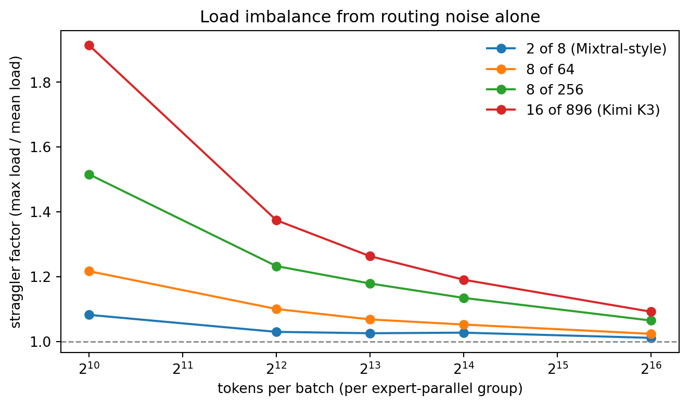
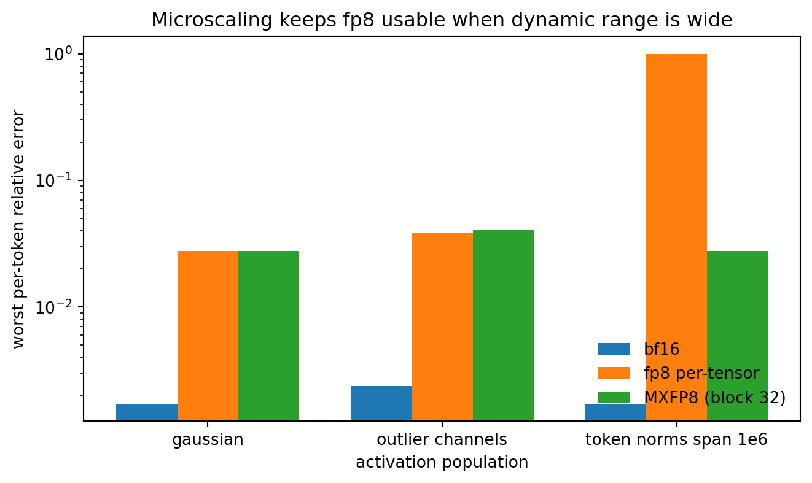

A dense transformer applies every parameter to every token. Doubling the width of the feed-forward blocks doubles both the parameter count and the cost of every forward pass, so capacity and compute are chained together. Mixture of Experts (MoE) breaks that chain. It replaces a single dense feed-forward network with a bank of parallel networks, the experts, and a small learned router that sends each token to only a few of them. The model can hold an enormous number of parameters while spending compute proportional to the few experts each token actually visits.
This decoupling of total parameters from active parameters is the central reason MoE sits underneath most frontier-scale language models shipped through 2025. The Switch Transformer scaled to over a trillion parameters while keeping per-token compute fixed, and open releases such as Mixtral 8x7B and DeepSeek-V3 made sparse MoE the default architecture for the largest open-weight models. The technique is conceptually simple, a gate plus a set of experts, but it introduces a genuinely new engineering problem: the router must spread load evenly across experts, or the model wastes most of its capacity on a handful of overused experts while the rest starve.
This chapter develops the mathematics of sparse top-k routing and the load-balancing loss that makes training stable, then builds a complete sparse MoE layer from scratch in PyTorch on the CPU, small enough to run in seconds yet faithful to the production design. It closes with the GPU-scale invocations a reader would actually use (Switch Transformer, Mixtral, expert-parallel training), shown but not executed because they require accelerators, and with the pitfalls that decide whether an MoE model trains well or collapses.
249.2 The Core Idea: Conditional Computation
In a dense transformer block the feed-forward sublayer computes, for a token representation \(x \in \mathbb{R}^{d}\),
\[
\mathrm{FFN}(x) = W_2\,\sigma(W_1 x),
\]
and this is applied identically to every token. The MoE block replaces \(\mathrm{FFN}\) with \(E\) experts \(\{f_1, \dots, f_E\}\), each itself a feed-forward network with its own parameters, plus a router (or gate) \(g\) that produces a distribution over experts. The output for a token is a weighted combination of the experts the router selects,
\[
y = \sum_{i \in \mathcal{T}(x)} g_i(x)\, f_i(x),
\]
where \(\mathcal{T}(x)\) is the set of experts chosen for \(x\). If \(\mathcal{T}(x)\) is all \(E\) experts the layer is dense MoE and costs \(E\) times a single FFN. The frontier design is sparse: \(\mathcal{T}(x)\) is the top \(k\) experts by gate score, with \(k\) much smaller than \(E\) (commonly \(k = 1\) or \(k = 2\)). A token then pays for only \(k\) experts no matter how large \(E\) grows, which is exactly the property that lets total parameters scale independently of per-token compute.
The distinction between total and active parameters is the vocabulary of MoE. Mixtral 8x7B has eight experts per layer and routes to two, so it carries roughly 47 billion total parameters but activates about 13 billion per token. Capacity that large at the cost of a 13 billion parameter forward pass is the whole point.
249.3 The Gating Network
The router is a single linear map followed by a softmax over experts. Given a token \(x\), the router logits are
For sparse routing we keep only the top \(k\) logits. Let \(\mathcal{T}(x)\) index the \(k\) largest entries of \(h(x)\). There are two standard conventions for the combine weights \(g_i\). The first softmaxes over the full set of experts and then keeps the selected weights; the second, used in Switch and many later models, renormalizes the softmax over the selected experts alone so the surviving weights sum to one,
Renormalizing keeps the output on the same scale regardless of how confident the router is, which stabilizes training. The reference implementation below uses this renormalized top-k form.
The top-k selection is not differentiable in the indices, the choice of which experts to use is a hard, discrete decision. Gradients still flow to the router through the weights\(g_i(x)\) of the experts that were selected, because those weights are smooth functions of the logits. The router therefore learns: if an expert produces output that reduces the loss, the gradient increases that expert’s weight, which raises its logit, which makes the router more likely to select it again. This indirect learning signal is enough in practice, but it is also the source of the load-balancing problem in the next section.
249.4 The Load-Balancing Problem
Left to itself, the router tends to collapse. Early in training a few experts are slightly better by chance, the router sends them more tokens, those experts receive more gradient and improve faster, and the router sends them still more tokens. This positive feedback loop concentrates traffic on a small subset of experts. The unused experts receive almost no gradient and never improve, so the effective capacity of the model shrinks toward that of a much smaller dense network. This failure is called routing collapse, and preventing it is the defining engineering challenge of MoE training.
The standard remedy, introduced with the Switch Transformer, is an auxiliary load-balancing loss added to the task loss. Consider a batch of \(T\) tokens routed across \(E\) experts. Define two quantities per expert. Let \(f_i\) be the fraction of tokens dispatched to expert \(i\),
\[
f_i = \frac{1}{T}\sum_{t=1}^{T} \mathbb{1}\!\left[\, i \in \mathcal{T}(x_t)\,\right],
\]
and let \(P_i\) be the average router probability mass assigned to expert \(i\) over the batch,
\[
P_i = \frac{1}{T}\sum_{t=1}^{T} p_i(x_t).
\]
The auxiliary loss is the scaled dot product of these two vectors,
with \(\alpha\) a small coefficient (Switch used \(\alpha = 10^{-2}\)). The factor \(E\) makes the loss scale-independent of the number of experts: when load is perfectly uniform, \(f_i = P_i = 1/E\) for every expert, the sum equals \(E \cdot (1/E)^2 = 1/E\), and \(E \cdot \mathcal{L}_{\text{aux}}/\alpha = 1\). Any imbalance pushes the value above one.
The design is subtle and worth dwelling on. The term \(f_i\) counts hard dispatch decisions and is not differentiable, but it acts only as a per-expert weight on the differentiable probability \(P_i\). The gradient therefore flows through \(P_i\), and it is largest for experts that are both overloaded (large \(f_i\)) and receiving high router confidence (large \(P_i\)). Minimizing \(\sum_i f_i P_i\) pushes the router to lower the probability it assigns to whichever experts are currently overworked, which spreads tokens toward the idle experts. The product form is what couples the hard load counts to the soft, trainable router so a single differentiable loss can flatten the distribution.
A complementary signal sometimes added is the router z-loss, \(\mathcal{L}_z = \frac{\beta}{T}\sum_t \big(\log \sum_j e^{h_j(x_t)}\big)^2\), which penalizes large router logits and improves numerical stability of the softmax. The implementation below focuses on the load-balancing loss, which is the one that prevents collapse.
249.5 Expert Capacity and Token Dropping
A second practical constraint appears when MoE runs on real hardware. Experts are implemented as fixed-size tensors, so each expert can process only a bounded number of tokens per batch. This bound is the expert capacity,
where \(T \cdot k / E\) is the number of tokens an expert would receive under perfectly uniform routing and the capacity factor (commonly 1.0 to 1.5) adds headroom for imbalance. If more than \(C\) tokens route to one expert, the overflow tokens are dropped: they skip the expert entirely and pass through only the residual connection. Capacity factor thus trades memory and compute (higher factor, fewer drops, more padding) against efficiency (lower factor, more drops). Token dropping is a feature of the batched GPU implementation, not of the mathematics, and our CPU reference computes the true routing without dropping so the mechanism is visible in isolation; the production code section returns to capacity as a deployment concern.
249.6 Compressing a Hybrid MoE for Deployment
A trained MoE is not the model you serve. Conditional computation cuts the FLOPs per token but not the memory footprint: every expert must be resident, and at frontier scale the parameter count (together with the KV cache) dominates the interactive-serving budget rather than arithmetic does. A production line of work therefore compresses a large MoE after training to meet tighter latency and concurrency targets. Bercovich et al. (2026)’s Nemotron-Labs-3-Puzzle-75B-A9B is a representative case: a hybrid MoE with 75B total parameters but only about 9B active per token (the “A9B”), derived from a larger parent by a multi-stage pipeline that pairs an iterative Puzzle compression search with knowledge distillation (the subject of the distillation chapter), reinforcement learning, quantization, and a multi-token-prediction head. Crucially, the compression jointly optimizes three coupled budgets rather than one: heterogeneous MoE pruning (dropping or shrinking experts unevenly across layers, since the load-balancing view of Section 4 implies different layers carry different amounts of routed information), the active-parameter budget (how many experts fire per token), and, because the architecture interleaves attention with Mamba state-space layers, Mamba-layer pruning.
The payoff is a serving result, not an accuracy one: on a single 8xB200 node the compressed model reaches roughly 2x the server throughput of its uncompressed parent at matched per-user throughput, and on a single H100 it lifts 1M-token-context concurrency from one request to eight, while retaining most of the parent’s quality across reasoning, coding, multilingual, long-context, and agentic benchmarks. The lesson for MoE practitioners is a division of labor: the routing and load-balancing machinery of this chapter sets a model’s quality, but a separate post-training compression stage sets whether that quality is economical to serve.
249.7 Production Code
We now build a sparse top-k MoE layer end to end in PyTorch, running on the CPU. The implementation is deliberately small and deterministic so every number below is reproducible, yet it contains the real pieces: a linear router, renormalized top-k gating, per-expert dispatch, the load-balancing auxiliary loss, and a measurement of how evenly tokens spread across experts. Mature open-source building blocks (PyTorch, NumPy) carry all the weight here; nothing in this section needs a GPU.
249.7.1 A Sparse Top-k MoE Layer
The expert is an ordinary two-layer feed-forward network. The router is a single linear layer. The forward pass computes router logits, selects the top \(k\) experts per token, renormalizes their gate weights, dispatches each token’s representation to its chosen experts, and accumulates the gated outputs. We also compute the load-balancing loss from the same routing decisions so it can be added to a task loss during training.
Code
import torchimport torch.nn as nnimport torch.nn.functional as Ftorch.manual_seed(0)class Expert(nn.Module):"""A single feed-forward expert."""def__init__(self, d_model: int, d_hidden: int):super().__init__()self.net = nn.Sequential( nn.Linear(d_model, d_hidden), nn.GELU(), nn.Linear(d_hidden, d_model), )def forward(self, x):returnself.net(x)class SparseMoE(nn.Module):"""Sparse top-k mixture-of-experts feed-forward layer."""def__init__(self, d_model: int, d_hidden: int, num_experts: int, k: int, aux_alpha: float=1e-2):super().__init__()self.num_experts = num_expertsself.k = kself.aux_alpha = aux_alphaself.router = nn.Linear(d_model, num_experts, bias=False)self.experts = nn.ModuleList( [Expert(d_model, d_hidden) for _ inrange(num_experts)] )def forward(self, x):# x: (tokens, d_model). Flatten any batch/seq dims before calling. tokens, d_model = x.shape logits =self.router(x) # (tokens, num_experts) probs = F.softmax(logits, dim=-1) # full router distribution# Top-k selection and renormalized gate weights over the chosen experts. topk_vals, topk_idx = probs.topk(self.k, dim=-1) # (tokens, k) gate = topk_vals / topk_vals.sum(dim=-1, keepdim=True)# Dispatch: accumulate gated expert outputs into the result. y = torch.zeros_like(x)# Per-expert dispatch fraction f_i (hard counts), for the aux loss. f = torch.zeros(self.num_experts, device=x.device)for e inrange(self.num_experts):# Which (token, slot) pairs selected expert e? mask = topk_idx == e # (tokens, k) bool token_sel = mask.any(dim=-1) # (tokens,) boolif token_sel.any():# Gate weight this expert contributes to each selected token. w = (gate * mask).sum(dim=-1)[token_sel] # (n_sel,) out =self.experts[e](x[token_sel]) # (n_sel, d_model) y[token_sel] += w.unsqueeze(-1) * out f[e] = token_sel.float().mean()# Load-balancing auxiliary loss: alpha * E * sum_i f_i * P_i. P = probs.mean(dim=0) # (num_experts,) aux_loss =self.aux_alpha *self.num_experts * torch.sum(f * P)return y, aux_loss, {"f": f.detach(), "P": P.detach()}d_model, d_hidden =32, 64num_experts, k =8, 2moe = SparseMoE(d_model, d_hidden, num_experts, k)n_params =sum(p.numel() for p in moe.parameters())expert_params =sum(p.numel() for p in moe.experts[0].parameters())print(f"experts: {num_experts}, top-k: {k}")print(f"total params: {n_params:,}")print(f"active params per token (router + {k} experts): "f"{moe.router.weight.numel() + k * expert_params:,}")
experts: 8, top-k: 2
total params: 33,792
active params per token (router + 2 experts): 8,640
The active-parameter count is far below the total: every token uses the router plus \(k\) of the \(E\) experts, so adding experts grows capacity without growing per-token compute. This is the decoupling from Section 2 made concrete.
249.7.2 Routing and Utilization on Synthetic Input
We push a batch of synthetic tokens through the layer and inspect the routing. Two checks matter. First, the output shape must match the input, the MoE is a drop-in replacement for a dense FFN. Second, we measure expert utilization, the fraction of tokens each expert receives, which is what the load-balancing loss is trying to flatten. On a randomly initialized router the load is already somewhat uneven, which is exactly the situation the auxiliary loss is designed to correct during training.
Code
torch.manual_seed(1)T =512# tokens in the batchx = torch.randn(T, d_model)y, aux_loss, stats = moe(x)print(f"input shape: {tuple(x.shape)}")print(f"output shape: {tuple(y.shape)}")print(f"aux load-balancing loss: {aux_loss.item():.4f}")f = stats["f"] # fraction of tokens per expertutil_pct = (f / f.sum() *100).tolist()print("\nexpert utilization (% of dispatched tokens):")for e, u inenumerate(util_pct): bar ="#"*int(round(u))print(f" expert {e}: {u:5.1f}% {bar}")ideal =100.0/ num_expertsspread =max(util_pct) -min(util_pct)print(f"\nideal uniform share: {ideal:.1f}% per expert")print(f"observed spread (max - min): {spread:.1f} percentage points")
The spread between the busiest and idlest expert is the imbalance the auxiliary loss penalizes. A perfectly balanced router would put every bar at the ideal share; a collapsed router would pile almost all tokens onto one or two experts.
249.7.3 Training Drives the Router Toward Balance
To show the load-balancing loss working, we train the layer for a short loop on a trivial reconstruction objective (make the output match a fixed linear target), adding the auxiliary loss to the task loss. We track the imbalance over steps. The point is not the task itself but that the combined loss flattens the expert distribution, the mechanism from Section 4 in action.
Code
torch.manual_seed(2)# A small, fixed reconstruction task so the run is fast and deterministic.target_map = nn.Linear(d_model, d_model)for p in target_map.parameters(): p.requires_grad_(False)model = SparseMoE(d_model, d_hidden, num_experts, k, aux_alpha=1e-2)opt = torch.optim.Adam(model.parameters(), lr=1e-3)data = torch.randn(256, d_model)with torch.no_grad(): targets = target_map(data)def imbalance(f):# Coefficient of variation of the per-expert load; 0 means perfectly even.return (f.std(unbiased=False) / (f.mean() +1e-9)).item()print(f"{'step':>5}{'task_loss':>10}{'aux_loss':>9}{'imbalance':>10}")for step inrange(201): y, aux, stats = model(data) task_loss = F.mse_loss(y, targets) loss = task_loss + aux opt.zero_grad() loss.backward() opt.step()if step %50==0:print(f"{step:5d}{task_loss.item():10.4f}{aux.item():9.4f} "f"{imbalance(stats['f']):10.4f}")
The task loss falls steadily while the auxiliary loss holds the routing in check, which is the behavior we want: the primary objective improves without the router being free to collapse onto a few experts. The cleaner demonstration that the auxiliary term matters is the controlled ablation in the next subsection, where the same run with the loss removed drifts to a markedly worse imbalance. In a real model the auxiliary coefficient \(\alpha\) is tuned so that it balances load without overwhelming the language-modeling loss.
249.7.4 The Effect of the Auxiliary Loss
A final controlled comparison isolates the auxiliary loss. We train two routers from the same initialization, one with the load-balancing loss and one without, and compare the final imbalance. Turning the auxiliary loss off should let the router drift toward collapse.
Code
torch.manual_seed(3)def train_router(use_aux: bool, steps: int=200): torch.manual_seed(7) # identical init for a fair comparison m = SparseMoE(d_model, d_hidden, num_experts, k, aux_alpha=1e-2) o = torch.optim.Adam(m.parameters(), lr=1e-3) d = torch.randn(256, d_model)with torch.no_grad(): t = target_map(d) final =Nonefor _ inrange(steps): y, aux, stats = m(d) loss = F.mse_loss(y, t) + (aux if use_aux else0.0) o.zero_grad() loss.backward() o.step() final = stats["f"]return imbalance(final)imb_with = train_router(use_aux=True)imb_without = train_router(use_aux=False)print(f"final imbalance WITH aux loss: {imb_with:.4f}")print(f"final imbalance WITHOUT aux loss: {imb_without:.4f}")print(f"the auxiliary loss reduces imbalance by "f"{(1- imb_with / imb_without) *100:.1f}%"if imb_without > imb_with else"the runs ended at similar imbalance on this toy task")
final imbalance WITH aux loss: 0.0690
final imbalance WITHOUT aux loss: 0.1642
the auxiliary loss reduces imbalance by 58.0%
This is the load-balancing loss earning its place: with the same data, optimizer, and initialization, the only difference is the auxiliary term, and it produces a measurably more even distribution of work across experts.
249.7.5 Scaling Up: Switch Transformer and Mixtral (requires GPU / large model)
The CPU layer above is the same design that runs at frontier scale, but training or serving a real MoE model needs accelerators, sharded experts, and optimized dispatch kernels. The code below is the genuine library invocation a reader would use on a GPU; it is shown, not executed, because no GPU is available in this environment.
Loading and running Mixtral 8x7B (a sparse MoE with eight experts and top-2 routing) through Hugging Face Transformers:
# requires GPU / large model: Mixtral 8x7B needs multi-GPU or heavy offload.from transformers import AutoModelForCausalLM, AutoTokenizerimport torchmodel_id ="mistralai/Mixtral-8x7B-v0.1"tok = AutoTokenizer.from_pretrained(model_id)model = AutoModelForCausalLM.from_pretrained( model_id, torch_dtype=torch.bfloat16, device_map="auto", # shards experts across available GPUs)inputs = tok("Mixture of experts routes each token to", return_tensors="pt").to(model.device)out = model.generate(**inputs, max_new_tokens=40)print(tok.decode(out[0], skip_special_tokens=True))
Hugging Face also exposes the Switch Transformer directly, including its top-1 routing and capacity-based token dropping:
# requires GPU / large model: Switch-Base has 8 to 128 experts per layer.from transformers import SwitchTransformersForConditionalGeneration, AutoTokenizertok = AutoTokenizer.from_pretrained("google/switch-base-8")model = SwitchTransformersForConditionalGeneration.from_pretrained("google/switch-base-8", device_map="auto", torch_dtype="bfloat16")inputs = tok("The <extra_id_0> walks in the park", return_tensors="pt").to(model.device)print(tok.decode(model.generate(**inputs)[0], skip_special_tokens=True))
Memory pressure is the binding constraint for MoE inference, because all experts must be resident even though each token uses only \(k\) of them. Quantization with bitsandbytes is the usual mitigation; it is shown here only, since quantized kernels target the GPU:
# requires GPU: bitsandbytes 4-bit quantization to fit a large MoE in memory.from transformers import AutoModelForCausalLM, BitsAndBytesConfigimport torchquant = BitsAndBytesConfig( load_in_4bit=True, bnb_4bit_compute_dtype=torch.bfloat16, bnb_4bit_quant_type="nf4",)model = AutoModelForCausalLM.from_pretrained("mistralai/Mixtral-8x7B-v0.1", quantization_config=quant, device_map="auto")
249.7.6 Expert-Parallel Training (requires GPU cluster)
At training scale the experts of a single layer are distributed across devices, a scheme called expert parallelism. Each device holds a subset of the experts, and an all-to-all collective shuffles tokens to the device that owns their selected expert, runs the expert, then shuffles the results back. The mature open-source tooling for this is DeepSpeed-MoE and Megatron-LM; the snippet shows the DeepSpeed MoE layer wrapping the same expert-and-gate structure built above, configured for expert parallelism across a GPU cluster.
# requires GPU cluster: expert-parallel MoE across multiple devices.import deepspeedimport torch.nn as nnexpert = nn.Sequential(nn.Linear(d_model, d_hidden), nn.GELU(), nn.Linear(d_hidden, d_model))moe_layer = deepspeed.moe.layer.MoE( hidden_size=d_model, expert=expert, num_experts=64, # total experts across the cluster ep_size=8, # experts sharded over 8 GPUs (expert parallel) k=2, # top-2 routing use_residual=False,)# The all-to-all token shuffle and the load-balancing loss are handled# inside the layer; the returned aux loss is added to the task loss.output, aux_loss, _ = moe_layer(hidden_states)
The conceptual model is unchanged from the CPU implementation: route to top-k, gate, combine, and balance the load. Expert parallelism is purely a systems answer to the fact that the experts no longer fit on one device.
249.7.7 Extreme Sparsity at Frontier Scale
The toy layer above uses \(E = 8\) experts with \(k = 2\), the Mixtral-style setting that most tutorials adopt. A genuine frontier MoE looks nothing like that. Kimi Team (2026) introduce Kimi K3, a 2.8 trillion parameter mixture of experts with roughly 104 billion activated parameters per token, native vision, and a one-million-token context window. Its Stable LatentMoE block, in the architecture description of that report, activates 16 of 896 routed experts per token, and the team reports about a 2.5x improvement in overall scaling efficiency over its predecessor together with fully released model weights, which makes it a rare case where the architecture of a frontier-class system is inspectable rather than inferred.
The number worth pausing on is the sparsity. Write the routing activation ratio as \(\rho_{\text{route}} = k/E\) and the active parameter fraction as \(\rho_{\text{param}} = P_{\text{act}}/P_{\text{total}}\). For K3,
against the textbook baseline of \(2/8 = 25\%\) and Mixtral’s \(13/47 \approx 27.7\%\). Each comparison has its own baseline, so it is worth stating them separately. At the router, K3 is about fourteen times sparser than the 2-of-8 layer our code cells simulate (\(25\% / 1.79\% \approx 14.0\)). In parameters, K3 is about seven and a half times sparser than Mixtral (\(27.7\% / 3.71\% \approx 7.5\)), which is the right comparison because the toy layer has no full model attached and therefore no parameter fraction of its own. The active parameter fraction sits above the routing ratio for the usual reason: attention, embeddings, and any always-on dense components are paid by every token regardless of routing, so they dilute the sparsity of the expert bank.
Extreme sparsity is not free, and the first bill arrives at load balancing. Take a batch of \(N\) tokens routed top-\(k\) over \(E\) experts. Even with a perfectly unbiased router, the indicator that token \(t\) selects expert \(i\) is Bernoulli with probability \(k/E\), so the per-expert load \(L_i\) is marginally binomial:
Holding \(N\) and \(k\) fixed and growing \(E\) shrinks \(\mu\) proportionally, so the coefficient of variation grows like \(\sqrt{E}\). At \(N = 8192\) tokens, the 2-of-8 layer gives \(\mu = 2048\) and, from the exact expression rather than the \(1/\sqrt{\mu}\) approximation, \(\mathrm{CV} = 1.9\%\); 16-of-896 gives \(\mu \approx 146.3\) and \(\mathrm{CV} = 8.2\%\). The approximation is fine once \(k/E\) is small, but it overstates the spread by a factor \(1/\sqrt{1 - k/E} \approx 1.15\) at \(k/E = 0.25\), which is how \(1.9\%\) turns into the \(2.2\%\) one gets from \(1/\sqrt{\mu}\); the table below prints the exact formula next to the measured value. This is pure sampling noise, before any of the routing collapse of Section 4 enters the picture. It is exactly why very sparse MoE needs stronger balancing than the auxiliary loss alone was designed for.
The payoff is a straggler argument for expert parallelism. In the all-to-all scheme of Section 7.6, a training step cannot finish until the most heavily loaded expert finishes, so step time is set by \(\max_i L_i\), not by the mean. Treating the loads as approximately Gaussian and weakly dependent, the expected maximum of \(E\) such variables is about \(\mu\,(1 + \mathrm{CV}\sqrt{2\ln E})\), giving a straggler factor
Both terms move the wrong way as the model gets sparser: \(\ln E\) rises in the numerator while \(\mu = Nk/E\) falls in the denominator. At \(N = 8192\) the formula gives \(S \approx 1.04\) for the 2-of-8 layer and \(S \approx 1.30\) for 16-of-896; the simulation below measures \(1.025\) and \(1.263\), because the Gaussian maximum runs slightly high for counts this discrete and for the mild negative dependence top-\(k\) routing induces between experts. Read \(S\) as an overhead on step time, not as an idle fraction: a measured \(S = 1.263\) means every step takes twenty-six percent longer than the balanced ideal, so the average device spends \(1 - 1/1.263 \approx 21\%\) of the step waiting on the slowest expert. A fifth of a frontier training fleet sitting idle is an enormous amount of hardware to leave on the table, and it is why balanced expert-parallel training is a real engineering claim in that work rather than a throwaway phrase. The same arithmetic sets the capacity factor of Section 5: the headroom needed to avoid dropping tokens is essentially \(S\), so extreme sparsity forces either a larger capacity factor (padding waste) or a smarter balancer.
The second bill arrives at inference, where extreme sparsity shifts the memory-to-FLOP ratio. An expert GEMM processing \(m\) tokens in bfloat16 does about \(2mP_e\) FLOPs while reading \(2P_e\) bytes of weights, so its arithmetic intensity is simply \(m\) FLOPs per byte, and \(m = Nk/E\) is the tokens-per-expert figure above. A modern accelerator has a ridge point near 300 FLOPs per byte, so staying compute bound requires roughly \(N \gtrsim 300\,E/k\) tokens in flight per expert-parallel group: about 1,200 for 2-of-8 but about 16,800 for 16-of-896. Below that, the layer is bandwidth bound and the sparsity buys latency but not throughput. Sparse models are therefore batch-hungry in a way dense models are not.
The simulation below routes synthetic tokens with an unbiased router at four sparsity settings and measures the load spread and the straggler factor directly. The printed table is taken at the \(N = 8192\) batch quoted above, with the measured coefficient of variation averaged over trials and the closed-form predictions alongside it.
import numpy as npimport matplotlib.pyplot as pltrng = np.random.default_rng(0)SETTINGS = [(8, 2, "2 of 8 (Mixtral-style)"), (64, 8, "8 of 64"), (256, 8, "8 of 256"), (896, 16, "16 of 896 (Kimi K3)")]BATCHES = [1024, 4096, 8192, 16384, 65536]REF =8192# the batch size quoted in the text aboveTRIALS, CHUNK =4, 4096def expert_loads(n_tokens, E, k, rng):"""Token counts per expert for an unbiased top-k router.""" counts = np.zeros(E, dtype=np.int64) done =0while done < n_tokens: m =min(CHUNK, n_tokens - done) logits = rng.standard_normal((m, E), dtype=np.float32) top = np.argpartition(-logits, k -1, axis=1)[:, :k] counts += np.bincount(top.ravel(), minlength=E) done += mreturn countscurves, ref_runs = {}, {}for E, k, name in SETTINGS: row = []for n in BATCHES: runs = [expert_loads(n, E, k, rng) for _ inrange(TRIALS)] row.append(float(np.mean([c.max() / c.mean() for c in runs])))if n == REF: ref_runs[name] = runs curves[name] = rowhdr = (f"{'setting':>23}{'k/E':>7}{'tok/exp':>8}{'CV':>7}{'CV thy':>7} "f"{'S':>6}{'S thy':>6}")print(f"at N = {REF:,} tokens per batch, {TRIALS} trials each\n{hdr}")for E, k, name in SETTINGS: runs = ref_runs[name] # CV averaged over trials mu = REF * k / E cv =float(np.mean([c.std(ddof=1) / c.mean() for c in runs])) s =float(np.mean([c.max() / c.mean() for c in runs])) cv_thy = np.sqrt((1- k / E) / mu) s_thy =1+ cv_thy * np.sqrt(2* np.log(E))print(f"{name:>23}{100* k / E:6.2f}% {mu:8.1f}{cv:7.3f}{cv_thy:7.3f} "f"{s:6.3f}{s_thy:6.3f}")print(f"\nstraggler factor at N = {BATCHES[-1]:,}: "+", ".join(f"{name}{curves[name][-1]:.3f}"for _, _, name in SETTINGS))print(f"active parameter fraction, Kimi K3: {100*104e9/2.8e12:.2f}%")print(f"active parameter fraction, Mixtral 8x7B: {100*13/47:.2f}%")for E, k, name in SETTINGS:print(f"batch needed to stay compute bound, {name}: {int(300* E / k):,} tokens")fig, ax = plt.subplots(figsize=(7.0, 4.2))for _, _, name in SETTINGS: ax.plot(BATCHES, curves[name], marker="o", label=name)ax.axhline(1.0, ls="dashed", lw=1, color="gray")ax.set_xscale("log", base=2)ax.set_xlabel("tokens per batch (per expert-parallel group)")ax.set_ylabel("straggler factor (max load / mean load)")ax.set_title("Load imbalance from routing noise alone")ax.legend(frameon=False)fig.tight_layout()plt.show()
at N = 8,192 tokens per batch, 4 trials each
setting k/E tok/exp CV CV thy S S thy
2 of 8 (Mixtral-style) 25.00% 2048.0 0.019 0.019 1.025 1.039
8 of 64 12.50% 1024.0 0.029 0.029 1.068 1.084
8 of 256 3.12% 256.0 0.061 0.062 1.179 1.205
16 of 896 (Kimi K3) 1.79% 146.3 0.082 0.082 1.263 1.302
straggler factor at N = 65,536: 2 of 8 (Mixtral-style) 1.011, 8 of 64 1.023, 8 of 256 1.064, 16 of 896 (Kimi K3) 1.092
active parameter fraction, Kimi K3: 3.71%
active parameter fraction, Mixtral 8x7B: 27.66%
batch needed to stay compute bound, 2 of 8 (Mixtral-style): 1,200 tokens
batch needed to stay compute bound, 8 of 64: 2,400 tokens
batch needed to stay compute bound, 8 of 256: 9,600 tokens
batch needed to stay compute bound, 16 of 896 (Kimi K3): 16,800 tokens

Figure 249.1: Straggler factor (max expert load divided by mean expert load) under a perfectly unbiased top-k router. Sparser configurations need far larger batches before routing noise averages out.
The 2-of-8 curve falls from 1.082 at 1,024 tokens to about 1.03 by 4,096, sits near that level through 16,384, and only reaches 1.011 at 65,536. Getting inside a couple of percent takes tens of thousands of tokens even in the easy configuration, but the tax is small enough throughout that the balancing problem looks solved in small demonstrations. The 16-of-896 curve starts at 1.914, near a factor of two, and is still paying a nine percent tax at 65,536 tokens per batch, a batch size no single device will see on its own. That gap is why frontier systems push balance into the router design, the capacity policy, and the parallelism strategy rather than relying on the auxiliary loss alone.
This closes the loop on the tradeoff that opened the chapter. MoE decouples total capacity from per-token compute, and \(\rho_{\text{route}}\) is the dial that sets how aggressively you exploit that decoupling. Turning it down toward two percent buys enormous capacity per unit of compute, which is precisely the scaling efficiency K3 reports. What you pay for it is not accuracy but engineering surface: a routing distribution whose noise floor grows like \(\sqrt{E}\), a training step whose duration is set by the unluckiest expert, an inference regime that only reaches peak throughput at very large batch, and a memory footprint that still holds all 2.8 trillion parameters even though any one token touches under four percent of them. Sparsity is a compute discount financed by a systems debt, and the size of that debt is what separates a textbook MoE layer from a frontier one.
249.8 Motif 3: What Is Left to Optimize Once Routing Is Sparse
Section 7.7 read one frontier system and drew a single conclusion from it: sparsity is a compute discount financed by a systems debt. One data point cannot tell you whether the discount has a natural stopping place, and it cannot tell you where the engineering effort goes once you stop turning the routing dial. Lim et al. (2026) supply the second point. Motif 3 is a decoder-only mixture of experts with 314 billion total parameters and 13.2 billion activated per token, built from sparse layers of 384 routed experts with 8 selected per token, pretrained on roughly 12.5 trillion tokens at context lengths up to 256K. It was released within weeks of Kimi Team (2026) by an unrelated team, and the two reports converge on the same sparsity regime while spending their engineering budgets in almost entirely different places. That divergence is the useful part, and it is what this section unpacks.
249.8.1 The Dense Floor
Take the two ratios of Section 7.7 at face value. For Motif 3,
against K3’s \(1.786\%\) and \(3.714\%\), Mixtral’s \(25\%\) and \(27.66\%\), and the toy layer’s \(25\%\). Motif 3 is twelve times sparser at the router than the 2-of-8 layer the code cells above simulate, and about six and a half times sparser in parameters than Mixtral. So far this is the same story as before. The interesting question is why two independent teams landed within three tenths of a percentage point of each other on \(\rho_{\text{route}}\).
The answer falls out of the gap between the two ratios. Split the total parameter count into an always-on part and a routed part,
where \(P_{\text{dense}}\) collects attention projections, embeddings, normalization, any shared experts, and the output head, all of which every token pays in full, and \(P_{\text{exp}}\) is the routed expert bank, of which a token touches the fraction \(k/E\). Then
Divide both lines by \(P_{\text{total}}\) and write \(f = P_{\text{dense}}/P_{\text{total}}\) for the always-on parameter fraction:
\[
\rho_{\text{param}} = f + (1 - f)\,\rho_{\text{route}}.
\]
This is a straight line in \(\rho_{\text{route}}\) with intercept \(f\) and slope \(1 - f\), and it inverts to give \(f\) from the two published numbers alone:
\[
f = \frac{\rho_{\text{param}} - \rho_{\text{route}}}{1 - \rho_{\text{route}}}.
\]
For Motif 3 this gives \(f \approx 2.166\%\) and for K3 \(f \approx 1.964\%\), against \(3.546\%\) for Mixtral. Two frontier models built by different teams put almost exactly the same share of their weight budget into the always-on stack. The consequence is the number worth remembering. The always-on share of what a single token actually costs is \(f/\rho_{\text{param}}\), which is \(51.5\%\) for Motif 3 and \(52.9\%\) for K3, against \(12.8\%\) for Mixtral. At the textbook sparsity the expert bank dominates the per-token bill and attention is a rounding error, which is exactly why tutorial treatments of MoE never discuss attention. At two percent routing, half of every token’s compute is attention and embeddings.
That reframes the optimization problem. Taking \(\rho_{\text{route}} \to 0\) in the line above sends \(\rho_{\text{param}} \to f\), so \(f\) is a hard floor: no amount of further sparsification can push the active fraction below the always-on stack. The headroom remaining to the router is
which is \(48.5\%\) of Motif 3’s current per-token cost. Even driving the routing ratio to zero, an obvious impossibility, buys less than a factor of two. Everything beyond that has to come out of the dense half, and the dense half is dominated by attention. This is why a technical report about a mixture of experts spends most of its architecture section on an attention mechanism, and it is the single most useful thing the second data point tells us.
flowchart TB
X["hidden state streams"] --> HC["manifold constrained hyper connections"]
HC --> DKV["down projection to latent c of width 512"]
HC --> KR["decoupled rope key of width 64"]
DKV --> CACHE["kv cache holds the latent plus the rope key only"]
KR --> CACHE
CACHE --> S1["signal attention map, first softmax"]
CACHE --> S2["noise attention map, second softmax, shared per head group"]
S1 --> DIFF["differential score is map one minus lambda times map two"]
S2 --> DIFF
DIFF --> RES["written back into the residual streams"]
RES --> ROUTER["router over 384 experts, top 8 per token"]
ROUTER --> EXP["expert ffn with expert specific polynorm"]
EXP --> A2A["all to all dispatch and combine in mxfp8"]
A2A --> MTP["multi token prediction heads"]
249.8.2 Grouped Differential Latent Attention, the Latent Half
Grouped Differential Latent Attention (GDLA) is two independent ideas composed. Take the compression first, because it is where the 256K context length comes from.
In standard multi-head attention, decoding step \(t\) needs every previous key and value, so the cache holds, per layer and per token, \(n_h\) keys and \(n_h\) values of width \(d_h\). At \(b\) bytes per scalar the cache for a sequence of length \(L\) across \(n_L\) layers is
\[
M_{\text{MHA}} = 2\,n_L\,n_h\,d_h\,b\,L .
\]
Grouped-query attention shrinks this by sharing key and value heads: with \(n_g\) key-value groups instead of \(n_h\), \(M_{\text{GQA}} = 2\,n_L\,n_g\,d_h\,b\,L\), a saving of exactly \(n_h/n_g\). The saving is real but bounded, because \(n_g\) cannot go below one without destroying the head structure entirely.
Multi-head latent attention (MLA), introduced with DeepSeek-V2 (DeepSeek-AI, 2024), takes a different route. Instead of caching keys and values, cache a single low-rank summary of the token and rebuild the heads on demand. Define a down-projection \(W^{DKV} \in \mathbb{R}^{d_c \times d}\) producing a latent \(c_t = W^{DKV} x_t \in \mathbb{R}^{d_c}\) with \(d_c \ll n_h d_h\), and per-head up-projections \(W_{UK}^{(h)}, W_{UV}^{(h)} \in \mathbb{R}^{d_h \times d_c}\) giving \(k_t^{(h)} = W_{UK}^{(h)} c_t\) and \(v_t^{(h)} = W_{UV}^{(h)} c_t\). Rotary position embedding cannot be folded into this cleanly, because a position-dependent rotation applied after the up-projection does not commute with it, so the latent scheme carries a small decoupled rotary key \(k_t^R \in \mathbb{R}^{d_r}\) shared across all heads. The cache then holds \(d_c + d_r\) scalars per layer per token:
The compression is a pure ratio of widths, independent of context length, layer count, and precision. At \(n_h = 64\), \(d_h = 128\), \(d_c = 512\), \(d_r = 64\) it is \(16384/576 \approx 28.4\).
The obvious objection is that rebuilding \(k_t^{(h)}\) for every cached position at every decode step costs more arithmetic than it saves in memory. It does not, because the up-projection can be absorbed into the query. The score between query head \(h\) at the current step and cached position \(s\) is
is computed once per decode step, not once per cached position. Counting multiply-accumulates per head per step, the rebuild path costs \(L\,d_h\,d_c\) to materialize the keys plus \(L\,d_h\) to score them, while the absorbed path costs \(d_h\,d_c\) once plus \(L\,d_c\) to score. The term that grows with context falls from \(L\,d_h\,d_c\) to \(L\,d_c\), a factor of \(d_h = 128\). Latent attention is therefore cheaper in both memory and length-dependent arithmetic than the reconstruction it appears to require, and the scores are normalized by \(\sqrt{d_h + d_r}\) because the content and rotary parts contribute to the same dot product.
The cell below prints the sparsity ledger of Section 8.1 and then the cache arithmetic for a Motif-3-scale decoder: 62 layers, 64 query heads of width 128, bfloat16 cache.
import numpy as npimport matplotlib.pyplot as plt# ---- Where Motif 3 sits on the sparsity axis, against the chapter's baselines.# (name, experts E, active k, total params, active params); None where undefined.MODELS = [("2 of 8 (toy layer)", 8, 2, None, None), ("Mixtral 8x7B", 8, 2, 47e9, 13e9), ("Kimi K3", 896, 16, 2.8e12, 104e9), ("Motif 3", 384, 8, 314e9, 13.2e9)]print(f"{'model':>20}{'k/E':>9}{'P_act/P_tot':>12}{'dense frac':>11} "f"{'dense share':>12}{'N* (300 E/k)':>13}")for name, E, k, ptot, pact in MODELS: rr = k / E line =f"{name:>20}{100* rr:8.3f}%"if ptot isNone: line +=f" {'-':>12}{'-':>11}{'-':>12}"else: rp = pact / ptot dense = (rp - rr) / (1- rr) # always-on share of total parameters line +=f" {100* rp:11.3f}% {100* dense:10.3f}% {100* dense / rp:11.1f}%"print(line +f" {int(300* E / k):13,}")# A Motif-3-scale decoder: 62 blocks, 64 query heads of width 128.N_LAYERS, N_HEADS, D_HEAD =62, 64, 128GQA_GROUPS =8# KV heads shared across query headsD_C, D_ROPE =512, 64# MLA latent width and decoupled RoPE key widthBYTES =2# bf16 cacheCONTEXTS = [4_096, 32_768, 131_072, 262_144]REF =262_144# the 256K context Motif 3 trains atper_tok_layer = {"MHA (64 kv heads)": 2* N_HEADS * D_HEAD * BYTES,"GQA (8 kv groups)": 2* GQA_GROUPS * D_HEAD * BYTES,"MLA latent (d_c=512, d_r=64)": (D_C + D_ROPE) * BYTES,}mha = per_tok_layer["MHA (64 kv heads)"]print(f"KV cache, {N_LAYERS} layers, {N_HEADS} heads x {D_HEAD} dims, bf16")hdr = (f"{'scheme':>30}{'B/tok/layer':>12}{'KiB/tok':>9}{'GiB @ 256K':>11} "f"{'vs MHA':>8}")print(hdr)for name, b in per_tok_layer.items(): tot = b * N_LAYERS gib = tot * REF /2**30print(f"{name:>30}{b:12,d}{tot /1024:9.1f}{gib:11.2f}{mha / b:7.1f}x")mla = per_tok_layer["MLA latent (d_c=512, d_r=64)"]print(f"\nMHA -> MLA compression ratio: {mha / mla:.2f}x")print(f"GQA -> MLA compression ratio: "f"{per_tok_layer['GQA (8 kv groups)'] / mla:.3f}x")for L in CONTEXTS: row =" ".join(f"{name.split()[0]}{b * N_LAYERS * L /2**30:8.2f} GiB"for name, b in per_tok_layer.items())print(f"context {L:>7,}: {row}")fig, ax = plt.subplots(figsize=(7.0, 4.2))xs = np.array(CONTEXTS)for name, b in per_tok_layer.items(): ax.plot(xs, b * N_LAYERS * xs /2**30, marker="o", label=name)ax.axhline(80, ls="dashed", lw=1, color="gray")ax.text(xs[0], 88, "80 GiB accelerator", fontsize=8, color="gray")ax.set_xscale("log", base=2)ax.set_yscale("log")ax.set_xlabel("context length (tokens)")ax.set_ylabel("KV cache for one sequence (GiB, bf16)")ax.set_title("Latent KV compression at frontier context lengths")ax.legend(frameon=False)fig.tight_layout()plt.show()
Figure 249.2: KV cache for a single sequence in a 62-layer, 64-head decoder under multi-head, grouped-query, and latent attention. The dashed line marks the capacity of one 80 GiB accelerator; only the latent cache leaves room for anything else at a 256K context.
At the 256K context Motif 3 trains at, one sequence needs 496.00 GiB of multi-head cache, 62.00 GiB of grouped-query cache at eight groups, and 17.44 GiB of latent cache. The first number is more than six 80 GiB accelerators for a single user’s history, which is why nobody ships full multi-head attention at this scale and why the honest comparison is the second against the third: latent attention is \(3.556\times\) smaller than an already-tuned grouped-query baseline, and it is the difference between a 256K sequence that fits alongside the model shards and one that does not. Note also that the curves are straight lines on a log-log plot with slope one, so the ranking never changes with context length; the compression ratio is fixed at \(28.44\times\) against multi-head attention for every \(L\).
The absorption identity is the part most worth writing out in code, because it is easy to state and easy to get wrong. The tab below verifies numerically that scoring against the rebuilt keys and scoring against the cached latent give the same answer.
import numpy as nprng = np.random.default_rng(7)D_MODEL, N_H, D_H, D_C, D_R, L =1024, 8, 64, 128, 16, 256W_DKV = rng.standard_normal((D_C, D_MODEL)) / np.sqrt(D_MODEL) # down-projectW_UK = rng.standard_normal((N_H, D_H, D_C)) / np.sqrt(D_C) # up-project KW_UV = rng.standard_normal((N_H, D_H, D_C)) / np.sqrt(D_C) # up-project VW_KR = rng.standard_normal((D_R, D_MODEL)) / np.sqrt(D_MODEL) # decoupled RoPEX = rng.standard_normal((L, D_MODEL))q_c = rng.standard_normal((N_H, D_H)) # one decode step, content partq_r = rng.standard_normal((D_R,)) # one decode step, RoPE partC = X @ W_DKV.T # (L, d_c) cachedK_R = X @ W_KR.T # (L, d_r) cached, shared by heads# Path A: rebuild every head's keys from the latent, then score.K = np.einsum("hdc,lc->hld", W_UK, C) # (H, L, d_h)score_a = np.einsum("hd,hld->hl", q_c, K) + K_R @ q_r# Path B: absorb W_UK into the query once, then score against the latent directly.q_abs = np.einsum("hdc,hd->hc", W_UK, q_c) # (H, d_c)score_b = q_abs @ C.T + K_R @ q_rprint(f"max |score_A - score_B| = {np.abs(score_a - score_b).max():.3e}")w = np.exp(score_a / np.sqrt(D_H + D_R))w /= w.sum(axis=1, keepdims=True)ctx = np.einsum("hl,hld->hd", w, np.einsum("hdc,lc->hld", W_UV, C))print(f"context shape {ctx.shape}, norm {np.linalg.norm(ctx):.4f}")mha_floats =2* N_H * D_Hmla_floats = D_C + D_Rprint(f"cache floats per token per layer: MHA {mha_floats}, MLA {mla_floats} "f"({mha_floats / mla_floats:.2f}x smaller)")print(f"at L = {L:,} tokens: MHA {mha_floats * L *2/1024:.1f} KiB, "f"MLA {mla_floats * L *2/1024:.1f} KiB (bf16)")
max |score_A - score_B| = 2.132e-14
context shape (8, 64), norm 3.4540
cache floats per token per layer: MHA 1024, MLA 144 (7.11x smaller)
at L = 256 tokens: MHA 512.0 KiB, MLA 72.0 KiB (bf16)
usingLinearAlgebra, RandomRandom.seed!(7)d_model, n_h, d_h, d_c, d_r, L =1024, 8, 64, 128, 16, 256W_dkv =randn(d_c, d_model) ./sqrt(d_model)W_uk = [randn(d_h, d_c) ./sqrt(d_c) for _ in1:n_h]W_kr =randn(d_r, d_model) ./sqrt(d_model)X =randn(L, d_model)q_c = [randn(d_h) for _ in1:n_h]q_r =randn(d_r)C = X * W_dkv'# (L, d_c) the only per-token state that is cachedK_R = X * W_kr'# (L, d_r) one decoupled rotary key, shared by heads# Path A: rebuild each head's keys from the latent, then score.score_a =hcat([(C * W_uk[h]') * q_c[h] .+ K_R * q_r for h in 1:n_h]...)# Path B: absorb W_uk into the query once per decode step.score_b =hcat([C * (W_uk[h]' * q_c[h]) .+ K_R * q_r for h in 1:n_h]...)println("max deviation: ", maximum(abs.(score_a .- score_b)))println("cache floats per token: MHA ", 2* n_h * d_h, ", MLA ", d_c + d_r)
usendarray::{Array1, Array2};/// Path A: materialize this head's keys from the cached latent, then score./// Cost grows as L * d_h * d_c multiply-accumulates per decode step.fn scores_rebuild(c:&Array2<f32>, w_uk:&Array2<f32>, q:&Array1<f32>) -> Array1<f32>{let keys = c.dot(&w_uk.t());// (L, d_c) x (d_c, d_h) -> (L, d_h) keys.dot(q) // (L, d_h) x (d_h,) -> (L,)}/// Path B: absorb the up-projection into the query once, then score against/// the latent directly. Cost grows as L * d_c, a factor of d_h cheaper.fn scores_absorbed(c:&Array2<f32>, w_uk:&Array2<f32>, q:&Array1<f32>) -> Array1<f32>{let q_tilde = w_uk.t().dot(q);// (d_c, d_h) x (d_h,) -> (d_c,), once per step c.dot(&q_tilde) // (L, d_c) x (d_c,) -> (L,)}fn main() {let (l, d_h, d_c) = (256usize,64usize,128usize);let c =Array2::<f32>::from_shape_fn((l, d_c),|(i, j)| ((i +3* j) asf32).sin());let w_uk =Array2::<f32>::from_shape_fn((d_h, d_c),|(i, j)| ((2* i + j) asf32).cos());let q =Array1::<f32>::from_shape_fn(d_h,|i| (i asf32).sin());let a = scores_rebuild(&c,&w_uk,&q);let b = scores_absorbed(&c,&w_uk,&q);let dev = a.iter().zip(b.iter()).map(|(x, y)| (x - y).abs()).fold(0.0f32,f32::max);println!("max deviation: {dev:.3e}");println!("length-dependent MACs: rebuild {}, absorbed {}", l * d_h * d_c, l * d_c);}
249.8.3 Grouped Differential Latent Attention, the Differential Half
The second idea attacks a different failure. A softmax attention row is a probability vector over \(L\) positions, and because it must sum to one it necessarily places mass on positions that carry no information. At \(L = 262{,}144\) that leaked mass is spread over a quarter of a million slots and does not go away with training, which is the mechanism behind attention sinks and the reason long-context retrieval degrades even when the relevant span is present.
Differential attention removes it by subtraction. Project the query and key into two halves, \(q = [q_1; q_2]\) and \(k = [k_1; k_2]\) with each half in \(\mathbb{R}^{d'}\), \(d' = d_h/2\), form two independent attention maps, and take a scaled difference:
where \(\lambda > 0\) is learned per head and re-parameterized as \(\lambda = \exp(\lambda_{q_1} \!\cdot\! \lambda_{k_1}) - \exp(\lambda_{q_2} \!\cdot\! \lambda_{k_2}) + \lambda_{\text{init}}\) to keep the gradient well conditioned, and the normalization restores the output scale that subtraction removes. Note that \(A_{\text{diff}}\) is no longer a probability vector: its rows sum to \(1 - \lambda\) and its entries may be negative, which is the point.
Why this cancels anything is worth deriving rather than asserting. Fix one query and model each of the two rows as a signal plus two kinds of contamination:
\[
a^{(1)} = s + \gamma u + \varepsilon^{(1)},
\qquad
a^{(2)} = \gamma u + \varepsilon^{(2)} .
\]
Here \(s \in \mathbb{R}^{L}\) is the genuine relevance pattern, \(u\) is a unit-norm common-mode direction with amplitude \(\gamma\), and \(\varepsilon^{(i)}\) are independent zero-mean perturbations with per-entry variance \(\sigma^2\). The common mode is shared between the two maps because both read the same positions through the same rotary phases and the same token-frequency statistics, so whatever positional or frequency bias one map picks up, the other picks up too. The \(\varepsilon^{(i)}\) are independent because the two maps come from different projections of the same input. Write \(N_c = \gamma^2\) for the common-mode power and \(N_i = L\sigma^2\) for the independent noise power. The differential row is
\[
a = a^{(1)} - \lambda a^{(2)} = s + (1 - \lambda)\gamma u + \varepsilon^{(1)} - \lambda \varepsilon^{(2)},
\]
so, using \(\|u\| = 1\) and independence of the two perturbations,
the last inequality holding for any \(N_c > 0\) because \(N_i/(N_c + N_i) < 1\). The right-hand side \(N_c + N_i\) is exactly the error of a single ordinary attention map, so a differential head with a well-chosen \(\lambda\) is never worse and is strictly better whenever any contamination is shared at all. Two limits make the behaviour concrete. As \(N_c/N_i \to \infty\) the optimum goes to \(\lambda^* \to 1\) and the error to \(N_i\), meaning the common mode is annihilated completely. As \(N_c/N_i \to 0\) the optimum goes to \(\lambda^* \to 0\) and the mechanism switches itself off, degenerating to ordinary attention. Naive full subtraction at \(\lambda = 1\) gives error \(2N_i\), which beats the baseline only when \(N_i < N_c\); this is why \(\lambda\) must be learned per head and per depth rather than fixed, since the ratio \(N_c/N_i\) is not the same in a local syntactic head as in a long-range retrieval head.
The cost is the obvious one: two softmax maps per output head doubles attention FLOPs and key-value work. This is where grouped enters. Rather than pairing every signal map with its own noise map, partition the signal heads into groups of size \(r\) and let each group share a single subtracted map. The head budget goes from \(2n_s\) to \(n_s(1 + 1/r)\), so the multiplier over vanilla attention is
\[
\frac{n_s(1 + 1/r)}{n_s} = 1 + \frac{1}{r},
\]
which is \(1.25\) at \(r = 4\) instead of \(2.0\). Sharing is not a compromise forced by budget: it is licensed by the derivation. The quantity being subtracted is by construction the component \(\gamma u\) that is not head-specific, so estimating it once per group is the statistically natural thing to do, and pooling \(r\) heads’ worth of evidence into one estimate of \(u\) reduces the variance of that estimate rather than increasing it. Composed with the latent cache of Section 8.2, this is GDLA: the differential mechanism buys the long-context precision, the grouping keeps its cost near a quarter rather than a double, and the latent compression keeps the memory affordable. Given the \(51.5\%\) dense share computed in Section 8.1, a \(1.25\times\) attention multiplier adds at most \(0.25 \times 51.5\% \approx 13\%\) to the per-token budget, and less than that in practice because embeddings and the output head are part of the dense share too. That is the kind of trade only a very sparse model can justify.
249.8.4 Selective MXFP8, and the All-to-All Bill
Section 7.7 established that the binding constraint in expert-parallel training is not FLOPs but the all-to-all shuffle, and Section 7.6 showed where it sits in the layer. The straggler factor \(S\) inflates the compute leg; the communication leg is a separate bill, and it is the one low precision pays down.
Ordinary fp8 attaches one scale to an entire tensor. MXFP8 is a block, or microscaling, format: a run of \(B\) consecutive values along the reduction axis shares a single scale \(X\) stored as E8M0, an eight-bit unsigned power-of-two exponent with no sign and no mantissa, while each element is stored in E4M3, one sign bit, four exponent bits, three mantissa bits. Storage per block is \(8B + 8\) bits, so the effective width per value is
\[
b_{\text{eff}} = 8 + \frac{8}{B} = 8.25 \text{ bits at } B = 32,
\]
against 16 for bfloat16. The compression is \(16/8.25 = 1.9394\times\), and the microscaling overhead over a hypothetical scale-free fp8 is \(8/(8 \cdot 32) = 3.125\%\). The scale is chosen per block as the smallest power of two that brings the block maximum inside the representable range,
with \(448\) the largest finite E4M3 magnitude, \(2^8 \cdot (1 + 6/8)\), the top codepoint of the exponent-8 binade being reserved for NaN. Because \(X\) is a power of two it is exact in E8M0 and applying it introduces no rounding of its own.
The reason for blocking is dynamic range. E4M3 spans from \(448\) down to the smallest subnormal \(2^{-9}\), a range of \(229{,}376\), or about eighteen binades. With one scale for the whole tensor, any value smaller than \(\max/229{,}376\) flushes to zero. That sounds like a generous margin until you remember what an MoE dispatch buffer actually contains: activations from tokens whose norms differ by orders of magnitude, plus the massive-activation channels that transformers reliably develop. A block scale gives every 32 values their own eighteen binades, so precision is preserved locally rather than globally.
The experiment below makes the failure visible, and the choice of metric is the whole point. It quantizes three activation populations and reports both the global relative Frobenius error and the worst per-token relative error, then repeats the comparison on an expert GEMM with both operands quantized, and finally converts the width saving into all-to-all bandwidth for one MoE layer.
import numpy as npimport matplotlib.pyplot as pltrng = np.random.default_rng(0)# ---- E4M3: 1 sign, 4 exponent, 3 mantissa bits. Enumerate the magnitudes.E_MIN, E_MAX, M_BITS =-6, 8, 3_norm = [2.0**e * (1+ m /2**M_BITS)for e inrange(E_MIN, E_MAX +1) for m inrange(2**M_BITS)ifnot (e == E_MAX and m ==2**M_BITS -1)] # top codepoint is NaN_sub = [2.0**E_MIN * m /2**M_BITS for m inrange(2**M_BITS)]GRID = np.unique(np.concatenate([_sub, _norm])) # ascending, includes 0FP8_MAX, FP8_MIN = GRID[-1], GRID[1] # 448.0 and 2^-9def e4m3(x):"""Round-to-nearest onto the E4M3 magnitude grid, saturating at 448.""" a = np.abs(x) i = np.searchsorted(GRID, a).clip(0, len(GRID) -1) lo, hi = GRID[(i -1).clip(0)], GRID[i]return np.sign(x) * np.where(a - lo <= hi - a, lo, hi)def bf16(x):"""Round-to-nearest-even truncation of float32 to bfloat16 (8 bit mantissa).""" u = np.ascontiguousarray(x, dtype=np.float32).view(np.uint32)return ((u +0x7FFF+ ((u >>16) &1)) &0xFFFF0000).view(np.float32)def fp8_tensor(x):"""Per-tensor fp8: one scale for the whole tensor, no microscaling."""return e4m3(x / (np.abs(x).max() / FP8_MAX)) * (np.abs(x).max() / FP8_MAX)def mxfp8(x, block=32):"""MXFP8: an E8M0 power-of-two scale shared by each block of 32 E4M3 values.""" flat = x.reshape(-1, block) amax = np.abs(flat).max(axis=1, keepdims=True)# Smallest power of two that brings the block maximum inside the E4M3 range. e = np.where(amax >0, np.ceil(np.log2(np.maximum(amax, 1e-38) / FP8_MAX)), 0.0) scale =2.0**e # the E8M0 shared scalereturn (e4m3(flat / scale) * scale).reshape(x.shape)def rel(a, b):returnfloat(np.linalg.norm(a - b) / np.linalg.norm(b))def worst_row(a, b):"""Largest per-token relative error: the number an aggregate norm hides.""" num = np.linalg.norm(a - b, axis=1) den = np.linalg.norm(b, axis=1)returnfloat(np.max(num / np.maximum(den, 1e-30)))# ---- Three activation populations shaped like an MoE dispatch buffer.D_MODEL, N_TOK, SPREAD =4096, 256, 1e6base = rng.standard_normal((N_TOK, D_MODEL)).astype(np.float32)chan = base.copy()chan[:, rng.choice(D_MODEL, 30, replace=False)] *=60.0row_scale =10.0** rng.uniform(-np.log10(SPREAD), 0.0, (N_TOK, 1)).astype(np.float32)wide = (base * row_scale).astype(np.float32)FMT = {"bf16": bf16, "fp8 per-tensor": fp8_tensor, "MXFP8 (block 32)": mxfp8}POP = {"gaussian": base, "outlier channels": chan, "token norms span 1e6": wide}for label, metric in (("global relative Frobenius error", rel), ("worst per-token relative error", worst_row)):print(label)print(f"{'format':>18} "+" ".join(f"{p:>22}"for p in POP))for fname, f in FMT.items():print(f"{fname:>18} "+" ".join(f"{metric(f(t), t):22.3e}"for t in POP.values()))print()# ---- The error that matters: a quantized expert GEMM against an fp32 reference.W = (rng.standard_normal((D_MODEL, 512)) / np.sqrt(D_MODEL)).astype(np.float32)ref = wide @ Wprint("expert GEMM on the wide-dynamic-range activations (weights also quantized)")for fname, f in FMT.items(): out = f(wide) @ f(W)print(f"{fname:>18} global {rel(out, ref):.3e} "f"worst token {worst_row(out, ref):.3e}")# ---- Effective width and the all-to-all bandwidth it buys.BLOCK, K, N_BATCH, D_HID =32, 8, 8192, 7168bits = {"bf16": 16.0, "fp8 per-tensor": 8.0, "MXFP8 (block 32)": 8.0+8.0/ BLOCK}print("\neffective bits per value: "+", ".join(f"{k}{v:g}"for k, v in bits.items()))print(f"MXFP8 vs bf16 compression: {bits['bf16'] / bits['MXFP8 (block 32)']:.4f}x "f"(overhead over pure fp8: {100* (bits['MXFP8 (block 32)'] /8-1):.3f}%)")print(f"E4M3 dynamic range: {FP8_MAX / FP8_MIN:,.0f} "f"({np.log2(FP8_MAX / FP8_MIN):.0f} binades), so a per-tensor scale loses "f"any value below max/{FP8_MAX / FP8_MIN:,.0f}")vals =2* K * D_HID * N_BATCH # dispatch plus combine, one MoE layerprint(f"\nall-to-all traffic, one MoE layer, N={N_BATCH:,} tokens, k={K}, "f"d_model={D_HID:,}: {vals:,} values")for k, v in bits.items(): gb = vals * v /8/1e9print(f"{k:>18}{gb:7.3f} GB {1000* gb /400:6.2f} ms on a 400 GB/s fabric")print(f"MXFP8 removes {100* (1- bits['MXFP8 (block 32)'] / bits['bf16']):.1f}% "f"of the bf16 volume, "f"{vals * (16- bits['MXFP8 (block 32)']) /8/1e9:.3f} GB per layer per step")# ---- What multi-token prediction buys in the same bandwidth-bound regime.E_MOE, K_MOE, SEQ =384, 8, 64# concurrent decode sequencesprint("\nmulti-token prediction as speculation: expected accepted tokens per pass")for alpha in (0.70, 0.85, 0.95): row = [(1- alpha**(g +1)) / (1- alpha) for g in (1, 2, 3)]print(f" acceptance {alpha:.2f}: "+" ".join(f"gamma={g}{v:.3f}"for g, v inzip((1, 2, 3), row)))base_ai = SEQ * K_MOE / E_MOEprint(f"arithmetic intensity at {SEQ} decode sequences, {K_MOE} of {E_MOE}: "f"{base_ai:.2f} FLOP/byte; with gamma=2 speculation {3* base_ai:.2f}; "f"compute-bound needs {int(300* E_MOE / K_MOE):,}")fig, ax = plt.subplots(figsize=(7.0, 4.2))x = np.arange(len(POP))for j, (fname, f) inenumerate(FMT.items()): ax.bar(x + (j -1) *0.26, [worst_row(f(t), t) for t in POP.values()], width=0.26, label=fname)ax.set_xticks(x, list(POP))ax.set_yscale("log")ax.set_ylabel("worst per-token relative error")ax.set_xlabel("activation population")ax.set_title("Microscaling keeps fp8 usable when dynamic range is wide")ax.legend(frameon=False, loc="lower right")fig.tight_layout()plt.show()
global relative Frobenius error
format gaussian outlier channels token norms span 1e6
bf16 1.663e-03 1.689e-03 1.662e-03
fp8 per-tensor 2.648e-02 2.635e-02 2.655e-02
MXFP8 (block 32) 2.652e-02 2.686e-02 2.639e-02
worst per-token relative error
format gaussian outlier channels token norms span 1e6
bf16 1.722e-03 2.374e-03 1.720e-03
fp8 per-tensor 2.774e-02 3.820e-02 1.000e+00
MXFP8 (block 32) 2.764e-02 4.030e-02 2.777e-02
expert GEMM on the wide-dynamic-range activations (weights also quantized)
bf16 global 2.351e-03 worst token 2.683e-03
fp8 per-tensor global 3.756e-02 worst token 1.000e+00
MXFP8 (block 32) global 3.699e-02 worst token 4.178e-02
effective bits per value: bf16 16, fp8 per-tensor 8, MXFP8 (block 32) 8.25
MXFP8 vs bf16 compression: 1.9394x (overhead over pure fp8: 3.125%)
E4M3 dynamic range: 229,376 (18 binades), so a per-tensor scale loses any value below max/229,376
all-to-all traffic, one MoE layer, N=8,192 tokens, k=8, d_model=7,168: 939,524,096 values
bf16 1.879 GB 4.70 ms on a 400 GB/s fabric
fp8 per-tensor 0.940 GB 2.35 ms on a 400 GB/s fabric
MXFP8 (block 32) 0.969 GB 2.42 ms on a 400 GB/s fabric
MXFP8 removes 48.4% of the bf16 volume, 0.910 GB per layer per step
multi-token prediction as speculation: expected accepted tokens per pass
acceptance 0.70: gamma=1 1.700 gamma=2 2.190 gamma=3 2.533
acceptance 0.85: gamma=1 1.850 gamma=2 2.573 gamma=3 3.187
acceptance 0.95: gamma=1 1.950 gamma=2 2.852 gamma=3 3.710
arithmetic intensity at 64 decode sequences, 8 of 384: 1.33 FLOP/byte; with gamma=2 speculation 4.00; compute-bound needs 14,400

Figure 249.3: Worst per-token relative error after quantization. On a well-conditioned Gaussian tensor per-tensor fp8 and MXFP8 are indistinguishable; once token norms span six orders of magnitude the single shared scale flushes the quiet tokens to zero and the error saturates at 1.0, while block scaling holds its accuracy.
Read the two tables against each other. On the global metric the two fp8 variants are indistinguishable across all three populations: \(2.655 \times 10^{-2}\) for per-tensor against \(2.639 \times 10^{-2}\) for MXFP8 on the wide-dynamic-range tensor, a difference well inside the noise. Anyone validating a quantization scheme with a Frobenius norm would conclude the shared scale is free. The per-token metric says otherwise. On the same tensor, per-tensor fp8 reaches a worst-token relative error of exactly \(1.000\), which is the signature of complete annihilation: the quiet tokens are gone, the reconstruction is zero, and the error equals the signal. MXFP8 holds at \(2.777 \times 10^{-2}\) and bfloat16 at \(1.720 \times 10^{-3}\). The expert GEMM repeats the pattern with both operands quantized: global errors of \(3.756 \times 10^{-2}\) and \(3.699 \times 10^{-2}\) are effectively tied, while the worst-token errors are \(1.000\) and \(4.178 \times 10^{-2}\). A training run in which a fraction of tokens receives pure noise from the expert layer does not diverge loudly; it quietly loses those tokens’ gradient signal, which is precisely the sort of failure that shows up as a mysterious few-percent quality gap months later.
That is what the \(3.125\%\) microscaling overhead is buying. The bandwidth arithmetic is the reason to pay it. Per MoE layer per step, each token is copied to its \(k\) selected experts on the dispatch and each expert’s output is returned on the combine, so the fabric carries \(2 k d_{\text{model}}\) values per token. At \(N = 8192\) tokens, \(k = 8\) and \(d_{\text{model}} = 7168\) that is \(939{,}524{,}096\) values, which is \(1.879\) GB in bfloat16 and \(0.969\) GB in MXFP8. On a 400 GB/s interconnect the leg falls from \(4.70\) ms to \(2.42\) ms, removing \(48.4\%\) of the volume and \(0.910\) GB of traffic per layer per step. Multiply by the number of MoE layers and by the step count of a 12.5 trillion token pretraining run and the saving stops being a footnote. This is why the report says computation and communication: quantizing the GEMMs alone leaves the actual bottleneck untouched.
The word doing the most work in the phrase is selective. Not every tensor tolerates 8.25 bits. Router logits decide which experts a token visits, and an 8-bit perturbation there can flip a top-\(k\) selection, discontinuously changing the function computed and injecting gradient noise that the auxiliary loss then chases. The load-balancing statistics of Section 4 are sums over the batch and need the accumulation range. Normalization reductions and the master weight copy in the optimizer are the classic places where low precision silently kills training. The GEMMs and the all-to-all payload go to MXFP8; the small, decision-carrying tensors stay wide. The rule of thumb is that a tensor can be narrowed when its error averages out over many terms and must stay wide when a single value determines a discrete choice.
249.8.5 Multi-Token Prediction, and Why a Sparse Model Wants It
The standard objective predicts one position ahead. Multi-token prediction adds \(D\) auxiliary heads that predict further, giving a weighted sum
with \(d = 0\) the ordinary next-token term. During training this densifies the learning signal: each position now contributes \(D+1\) gradient terms instead of one, and the deeper heads force the shared trunk to carry information about the next several tokens rather than just the immediate one. At inference the same heads become a draft model with no extra network to train or serve.
The speculative payoff is a short calculation. Draft \(\gamma\) tokens, verify them in a single forward pass, and accept a prefix. Under the standard first-order model where each drafted token is accepted independently with probability \(\alpha\), the expected number of tokens committed per verification pass is
the final term counting the token the verifier itself emits when the draft is rejected or exhausted. At \(\alpha = 0.85\) this gives \(1.850\), \(2.573\) and \(3.187\) for \(\gamma = 1, 2, 3\), and at \(\alpha = 0.95\) it gives \(1.950\), \(2.852\) and \(3.710\).
The reason this appears in a report about a sparse model rather than a dense one comes straight from the arithmetic intensity argument of Section 7.7. There the intensity of an expert GEMM was \(m = Nk/E\) FLOPs per byte, with a ridge point near 300. For Motif 3 the batch needed to stay compute bound is \(300 E/k = 14{,}400\) tokens per expert-parallel group. Decoding does not remotely reach it: with 64 concurrent sequences the intensity is \(64 \cdot 8 / 384 = 1.33\) FLOPs per byte, three orders of magnitude below the ridge. Speculation with \(\gamma = 2\) verifies three positions per sequence in one pass, raising the intensity to \(4.00\) at unchanged latency. That is still nowhere near 14,400, so speculation does not make the layer compute bound and it would be wrong to claim it does. What it does is amortize the weight read. The 13.2 billion active parameters are streamed from memory once per pass regardless, and MTP makes that single read produce up to \(2.573\) accepted tokens instead of one. In a regime where the layer is unambiguously memory bound, multiplying the useful work per byte read is the speedup. The sparser the model, the lower \(m\), and the more a bandwidth-amortizing trick is worth: this is a technique whose value is created by the same design decision that created the problem.
249.8.6 Two Stabilizers Aimed at Depth and at Specialization
Manifold-constrained hyper-connections. Replace the single residual stream with \(n\) parallel streams \(H^{\ell} \in \mathbb{R}^{n \times d}\). A block reads a learned combination, writes its output back through a learned distribution, and mixes the streams:
with \(A^{\ell} \in \mathbb{R}^{n \times n}\) the mixing matrix, \(\alpha^{\ell} \in \mathbb{R}^{n}\) selecting the block input and \(b^{\ell} \in \mathbb{R}^{n}\) distributing its output. The ordinary residual connection is the case \(n = 1\), \(A^{\ell} = 1\). The danger is immediate: iterating the identity path across depth gives a gain of \(\prod_{\ell} \|A^{\ell}\|\), so an unconstrained \(A^{\ell}\) reintroduces exponential growth or decay in depth, the exact pathology residual connections were invented to remove, one level up the hierarchy. Constraining each \(A^{\ell}\) to a manifold on which the spectral radius is pinned fixes this by construction rather than by initialization luck. Two natural choices are the orthogonal group, where \(\|A^{\ell} x\| = \|x\|\) exactly, and the doubly stochastic matrices, where row and column sums are one so \(\rho(A^{\ell}) = 1\) and the uniform stream mixture is preserved. Either way \(\prod_{\ell} \|A^{\ell}\| = 1\) at every depth, and the multi-stream residual is as safe as the single-stream one it generalizes.
Expert-specific PolyNorm. PolyNorm replaces a fixed pointwise activation with a learned low-degree polynomial of normalized elementwise powers,
where \(x^i\) is taken elementwise and the RMS normalization keeps each power on the same scale so the coefficients \(a_i\) are comparable. Making \((a_1, a_2, a_3, b)\) expert-specific costs four scalars per expert, or \(4 \times 384 = 1536\) extra scalars per MoE layer, which is nothing against the expert weights. The reason it belongs in an MoE and not in a dense model is a tension this chapter has already set up. The auxiliary loss of Section 4 pushes the router toward equal load, and equal load pushes experts toward interchangeability, which is the opposite of the specialization that motivated the architecture. But the balancing loss constrains routing statistics only; it says nothing about the functional form of the experts. Giving each expert its own nonlinearity restores an axis of differentiation that the balancer cannot flatten, at a parameter cost of essentially zero. It is a cheap answer to a problem the balancing machinery creates.
249.8.7 Multi-Teacher On-Policy Distillation as the Consolidation Step
Motif 3’s post-training is general supervised fine-tuning, then six specialist teachers trained with reinforcement learning plus one software-engineering teacher trained with supervised fine-tuning, then a consolidation of all seven into a single student by Multi-teacher On-Policy Distillation. The on-policy part is the subject of Chapter 702 and its prefix-trap analysis in Section 247.8: sampling the trajectory from the student rather than the teacher makes the training distribution equal to the deployment distribution by construction, eliminating the exposure bias that off-policy sequence distillation carries. The multi-teacher part introduces a design choice with a clean and consequential answer.
With teachers \(\pi_1, \dots, \pi_J\) and non-negative weights \(w_j\) summing to one, write the per-context objective over the vocabulary \(\mathcal{V}\), abbreviating \(p = \pi_\theta(\cdot \mid y_{<t})\) and \(q_j = \pi_j(\cdot \mid y_{<t})\):
The reverse-KL multi-teacher target is the normalized weighted geometric mean of the teachers, a product of experts. It is conjunctive: since \(p^*(v) = 0\) whenever any \(q_j(v) = 0\) with \(w_j > 0\), the support of the target is \(\bigcap_j \mathrm{supp}(q_j)\), so a token that any weighted teacher considers implausible is suppressed no matter how confident the others are.
Contrast the forward direction. For \(\sum_j w_j D_{\mathrm{KL}}(q_j \| p)\) the \(p\)-dependent part is \(-\sum_v \big(\sum_j w_j q_j(v)\big)\log p(v)\), a cross-entropy against the mixture, minimized at
\[
p^{*} = \sum_j w_j q_j,
\]
the arithmetic mean. That target is disjunctive: its support is the union of the teachers’ supports, so it inherits every teacher’s errors alongside every teacher’s strengths.
With seven teachers of narrow and only partly overlapping competence, the difference is not cosmetic. The geometric target refuses to average a mathematics specialist’s confident answer with a coding specialist’s uninformed guess on the same token, because the uninformed teacher’s near-zero probability drags the product down. The arithmetic target would happily average them. The plausible reading of Motif 3’s reported strength on hallucination-sensitive evaluation is structural rather than incidental: a product-of-experts target is biased against exactly the confident-but-unsupported token that a mixture target would wave through. The price is that the geometric mean is mode-seeking and can collapse output diversity, which is the other reason the on-policy part matters. Sampling from the student keeps it exploring its own distribution instead of being pinned to a single mode of the product.
It is worth noticing, without over-reading it, that the architecture and the training procedure share a shape. At inference a token consults 8 of 384 experts and their outputs are combined; at consolidation the student is pulled toward the intersection of seven specialists rather than their average. Sparse specialization with conjunctive combination, twice.
249.8.8 What the Second Data Point Says
Put the two reports side by side. Kimi Team (2026) and Lim et al. (2026) arrive at \(\rho_{\text{route}}\) of \(1.786\%\) and \(2.083\%\) and at always-on parameter fractions of \(1.964\%\) and \(2.166\%\), from different teams, different corpora, and different training stacks. The convergence is the finding. It says the routing dial has been turned about as far as it usefully goes, and Section 8.1 explains why: at these ratios roughly half the per-token cost is already the dense floor, so the remaining headroom from routing alone is under a factor of two.
Where the two reports diverge is instructive. K3’s contribution is on the routing and scaling axis, and Section 7.7 read it that way. Motif 3 spends its budget on the other half of the token: attention that both compresses its cache by \(28.44\times\) against multi-head and cancels common-mode noise with a provably-never-worse subtraction, a numeric format that halves the all-to-all bill while keeping quiet tokens alive, an auxiliary objective that amortizes the weight read that sparse decoding cannot escape, and a post-training procedure whose target is a product rather than a mixture. Not one of those is a routing idea. Together they are the argument that once a model is sparse enough, the interesting engineering is no longer about the experts.
249.9 Pitfalls and When to Use
Routing collapse is the failure mode to watch. Without an effective load-balancing loss the router concentrates tokens on a few experts and the rest never train. Monitor per-expert utilization during training, not just the loss curve; a healthy run keeps every expert busy. The auxiliary coefficient \(\alpha\) is the main knob: too small and load drifts toward collapse, too large and balancing fights the language-modeling objective and degrades quality. The Switch value of \(10^{-2}\) is a reasonable starting point.
Capacity factor trades memory against dropped tokens. A capacity factor near 1.0 minimizes padding but drops tokens whenever load is uneven, and dropped tokens get no expert computation at all, which hurts quality. A higher factor wastes compute on padding. The right value depends on how well balanced the router is, so capacity and the auxiliary loss must be tuned together.
MoE is memory-bound at inference even though it is compute-light. Every expert must be resident in memory, so a model with 47 billion total parameters needs memory for all of them even while computing as if it had 13 billion. This is why MoE shines for training-time efficiency and high-throughput serving but is awkward on memory-constrained single devices. Quantization and expert offloading are the standard mitigations.
Fine-tuning behaves differently from dense models. Sparse MoE models can overfit faster on small downstream datasets because each expert sees only a slice of the data, and the router can shift its routing under fine-tuning in ways that destabilize training. Lower learning rates, careful regularization, and sometimes freezing the router are common practice.
When to reach for MoE. Use it when you want to grow model capacity under a fixed per-token compute budget, typically at large scale where the parameter count is the bottleneck and you have the memory to hold all experts and the infrastructure for expert-parallel training or high-throughput batched serving. Prefer a dense model when memory is the binding constraint, when the deployment is latency-sensitive on a single small device, or when the model is small enough that the routing machinery and its training instabilities are not worth the added capacity. MoE is a scaling tool: it pays off precisely when you have more parameters to spend than compute to spend on them, and it asks in return that you take load balancing seriously.
249.10 References
Shazeer, N., Mirhoseini, A., Maziarz, K., Davis, A., Le, Q., Hinton, G., and Dean, J. “Outrageously Large Neural Networks: The Sparsely-Gated Mixture-of-Experts Layer.” International Conference on Learning Representations (ICLR), 2017. https://openreview.net/forum?id=B1ckMDqlg
Fedus, W., Zoph, B., and Shazeer, N. “Switch Transformers: Scaling to Trillion Parameter Models with Simple and Efficient Sparsity.” Journal of Machine Learning Research, 2022. https://arxiv.org/abs/2101.03961
Lepikhin, D. et al. “GShard: Scaling Giant Models with Conditional Computation and Automatic Sharding.” 2020. https://arxiv.org/abs/2006.16668
Jiang, A. Q. et al. “Mixtral of Experts.” 2024. https://arxiv.org/abs/2401.04088
DeepSeek-AI. “DeepSeek-V2: A Strong, Economical, and Efficient Mixture-of-Experts Language Model” (introduces multi-head latent attention). 2024. https://arxiv.org/abs/2405.04434
Zoph, B. et al. “ST-MoE: Designing Stable and Transferable Sparse Expert Models.” 2022. https://arxiv.org/abs/2202.08906
Rajbhandari, S. et al. “DeepSpeed-MoE: Advancing Mixture-of-Experts Inference and Training to Power Next-Generation AI Scale.” 2022. https://arxiv.org/abs/2201.05596
Zhou, Y. et al. “Mixture-of-Experts with Expert Choice Routing.” Advances in Neural Information Processing Systems 35, 2022. https://arxiv.org/abs/2202.09368
Bercovich, A. et al. “Nemotron-Labs-3-Puzzle-75B-A9B: Compressing Hybrid MoE LLMs.” 2026. https://arxiv.org/abs/2607.04371
Kimi Team. “Kimi K3: Open Frontier Intelligence.” 2026. https://arxiv.org/abs/2607.24653
Lim, J. et al. “Motif 3: Technical Report.” 2026. https://arxiv.org/abs/2608.09119
Kimi Team. 2026. “Kimi K3: Open Frontier Intelligence.”arXiv Preprint arXiv:2607.24653.
Lim, Junghwan, Joon Son Chung, Sungmin Lee, Wai Ting Cheung, Gihun Cho, Minsu Ha, Sangho Kang, et al. 2026. “Motif 3: Technical Report.”arXiv Preprint arXiv:2608.09119.
Source Code
# Mixture of Experts## IntroductionA dense transformer applies every parameter to every token. Doubling the width of the feed-forward blocks doubles both the parameter count and the cost of every forward pass, so capacity and compute are chained together. **Mixture of Experts (MoE)** breaks that chain. It replaces a single dense feed-forward network with a bank of parallel networks, the experts, and a small learned router that sends each token to only a few of them. The model can hold an enormous number of parameters while spending compute proportional to the few experts each token actually visits.This decoupling of total parameters from active parameters is the central reason MoE sits underneath most frontier-scale language models shipped through 2025. The Switch Transformer scaled to over a trillion parameters while keeping per-token compute fixed, and open releases such as Mixtral 8x7B and DeepSeek-V3 made sparse MoE the default architecture for the largest open-weight models. The technique is conceptually simple, a gate plus a set of experts, but it introduces a genuinely new engineering problem: the router must spread load evenly across experts, or the model wastes most of its capacity on a handful of overused experts while the rest starve.This chapter develops the mathematics of sparse top-k routing and the load-balancing loss that makes training stable, then builds a complete sparse MoE layer from scratch in PyTorch on the CPU, small enough to run in seconds yet faithful to the production design. It closes with the GPU-scale invocations a reader would actually use (Switch Transformer, Mixtral, expert-parallel training), shown but not executed because they require accelerators, and with the pitfalls that decide whether an MoE model trains well or collapses.## The Core Idea: Conditional ComputationIn a dense transformer block the feed-forward sublayer computes, for a token representation $x \in \mathbb{R}^{d}$,$$\mathrm{FFN}(x) = W_2\,\sigma(W_1 x),$$and this is applied identically to every token. The MoE block replaces $\mathrm{FFN}$ with $E$ experts $\{f_1, \dots, f_E\}$, each itself a feed-forward network with its own parameters, plus a router (or gate) $g$ that produces a distribution over experts. The output for a token is a weighted combination of the experts the router selects,$$y = \sum_{i \in \mathcal{T}(x)} g_i(x)\, f_i(x),$$where $\mathcal{T}(x)$ is the set of experts chosen for $x$. If $\mathcal{T}(x)$ is all $E$ experts the layer is *dense* MoE and costs $E$ times a single FFN. The frontier design is *sparse*: $\mathcal{T}(x)$ is the top $k$ experts by gate score, with $k$ much smaller than $E$ (commonly $k = 1$ or $k = 2$). A token then pays for only $k$ experts no matter how large $E$ grows, which is exactly the property that lets total parameters scale independently of per-token compute.The distinction between *total* and *active* parameters is the vocabulary of MoE. Mixtral 8x7B has eight experts per layer and routes to two, so it carries roughly 47 billion total parameters but activates about 13 billion per token. Capacity that large at the cost of a 13 billion parameter forward pass is the whole point.## The Gating NetworkThe router is a single linear map followed by a softmax over experts. Given a token $x$, the router logits are$$h(x) = W_g\, x \in \mathbb{R}^{E}, \qquad W_g \in \mathbb{R}^{E \times d},$$and the gate weights are the softmax of those logits,$$p_i(x) = \frac{\exp\!\big(h_i(x)\big)}{\sum_{j=1}^{E} \exp\!\big(h_j(x)\big)}.$$For sparse routing we keep only the top $k$ logits. Let $\mathcal{T}(x)$ index the $k$ largest entries of $h(x)$. There are two standard conventions for the combine weights $g_i$. The first softmaxes over the full set of experts and then keeps the selected weights; the second, used in Switch and many later models, renormalizes the softmax over the selected experts alone so the surviving weights sum to one,$$g_i(x) = \frac{\exp\!\big(h_i(x)\big)}{\sum_{j \in \mathcal{T}(x)} \exp\!\big(h_j(x)\big)}, \qquad i \in \mathcal{T}(x).$$Renormalizing keeps the output on the same scale regardless of how confident the router is, which stabilizes training. The reference implementation below uses this renormalized top-k form.The top-k selection is not differentiable in the indices, the choice of which experts to use is a hard, discrete decision. Gradients still flow to the router through the *weights* $g_i(x)$ of the experts that were selected, because those weights are smooth functions of the logits. The router therefore learns: if an expert produces output that reduces the loss, the gradient increases that expert's weight, which raises its logit, which makes the router more likely to select it again. This indirect learning signal is enough in practice, but it is also the source of the load-balancing problem in the next section.## The Load-Balancing ProblemLeft to itself, the router tends to collapse. Early in training a few experts are slightly better by chance, the router sends them more tokens, those experts receive more gradient and improve faster, and the router sends them still more tokens. This positive feedback loop concentrates traffic on a small subset of experts. The unused experts receive almost no gradient and never improve, so the effective capacity of the model shrinks toward that of a much smaller dense network. This failure is called **routing collapse**, and preventing it is the defining engineering challenge of MoE training.The standard remedy, introduced with the Switch Transformer, is an auxiliary **load-balancing loss** added to the task loss. Consider a batch of $T$ tokens routed across $E$ experts. Define two quantities per expert. Let $f_i$ be the fraction of tokens dispatched to expert $i$,$$f_i = \frac{1}{T}\sum_{t=1}^{T} \mathbb{1}\!\left[\, i \in \mathcal{T}(x_t)\,\right],$$and let $P_i$ be the average router probability mass assigned to expert $i$ over the batch,$$P_i = \frac{1}{T}\sum_{t=1}^{T} p_i(x_t).$$The auxiliary loss is the scaled dot product of these two vectors,$$\mathcal{L}_{\text{aux}} = \alpha \cdot E \cdot \sum_{i=1}^{E} f_i\, P_i,$$with $\alpha$ a small coefficient (Switch used $\alpha = 10^{-2}$). The factor $E$ makes the loss scale-independent of the number of experts: when load is perfectly uniform, $f_i = P_i = 1/E$ for every expert, the sum equals $E \cdot (1/E)^2 = 1/E$, and $E \cdot \mathcal{L}_{\text{aux}}/\alpha = 1$. Any imbalance pushes the value above one.The design is subtle and worth dwelling on. The term $f_i$ counts hard dispatch decisions and is not differentiable, but it acts only as a per-expert weight on the differentiable probability $P_i$. The gradient therefore flows through $P_i$, and it is largest for experts that are *both* overloaded (large $f_i$) *and* receiving high router confidence (large $P_i$). Minimizing $\sum_i f_i P_i$ pushes the router to lower the probability it assigns to whichever experts are currently overworked, which spreads tokens toward the idle experts. The product form is what couples the hard load counts to the soft, trainable router so a single differentiable loss can flatten the distribution.A complementary signal sometimes added is the **router z-loss**, $\mathcal{L}_z = \frac{\beta}{T}\sum_t \big(\log \sum_j e^{h_j(x_t)}\big)^2$, which penalizes large router logits and improves numerical stability of the softmax. The implementation below focuses on the load-balancing loss, which is the one that prevents collapse.## Expert Capacity and Token DroppingA second practical constraint appears when MoE runs on real hardware. Experts are implemented as fixed-size tensors, so each expert can process only a bounded number of tokens per batch. This bound is the **expert capacity**,$$C = \Big\lceil \text{capacity\_factor} \cdot \frac{T \cdot k}{E} \Big\rceil,$$where $T \cdot k / E$ is the number of tokens an expert would receive under perfectly uniform routing and the capacity factor (commonly 1.0 to 1.5) adds headroom for imbalance. If more than $C$ tokens route to one expert, the overflow tokens are **dropped**: they skip the expert entirely and pass through only the residual connection. Capacity factor thus trades memory and compute (higher factor, fewer drops, more padding) against efficiency (lower factor, more drops). Token dropping is a feature of the batched GPU implementation, not of the mathematics, and our CPU reference computes the true routing without dropping so the mechanism is visible in isolation; the production code section returns to capacity as a deployment concern.## Compressing a Hybrid MoE for DeploymentA trained MoE is not the model you serve. Conditional computation cuts the FLOPs per token but not the memory footprint: every expert must be resident, and at frontier scale the parameter count (together with the KV cache) dominates the interactive-serving budget rather than arithmetic does. A production line of work therefore *compresses* a large MoE after training to meet tighter latency and concurrency targets. Bercovich et al. (2026)'s **Nemotron-Labs-3-Puzzle-75B-A9B** is a representative case: a hybrid MoE with 75B total parameters but only about 9B active per token (the "A9B"), derived from a larger parent by a multi-stage pipeline that pairs an *iterative Puzzle* compression search with knowledge distillation (the subject of the distillation chapter), reinforcement learning, quantization, and a multi-token-prediction head. Crucially, the compression jointly optimizes three coupled budgets rather than one: **heterogeneous MoE pruning** (dropping or shrinking experts unevenly across layers, since the load-balancing view of Section 4 implies different layers carry different amounts of routed information), the **active-parameter budget** (how many experts fire per token), and, because the architecture interleaves attention with Mamba state-space layers, **Mamba-layer pruning**.The payoff is a *serving* result, not an accuracy one: on a single 8xB200 node the compressed model reaches roughly 2x the server throughput of its uncompressed parent at matched per-user throughput, and on a single H100 it lifts 1M-token-context concurrency from one request to eight, while retaining most of the parent's quality across reasoning, coding, multilingual, long-context, and agentic benchmarks. The lesson for MoE practitioners is a division of labor: the routing and load-balancing machinery of this chapter sets a model's *quality*, but a separate post-training compression stage sets whether that quality is *economical to serve*.## Production CodeWe now build a sparse top-k MoE layer end to end in PyTorch, running on the CPU. The implementation is deliberately small and deterministic so every number below is reproducible, yet it contains the real pieces: a linear router, renormalized top-k gating, per-expert dispatch, the load-balancing auxiliary loss, and a measurement of how evenly tokens spread across experts. Mature open-source building blocks (PyTorch, NumPy) carry all the weight here; nothing in this section needs a GPU.### A Sparse Top-k MoE LayerThe expert is an ordinary two-layer feed-forward network. The router is a single linear layer. The forward pass computes router logits, selects the top $k$ experts per token, renormalizes their gate weights, dispatches each token's representation to its chosen experts, and accumulates the gated outputs. We also compute the load-balancing loss from the same routing decisions so it can be added to a task loss during training.```{python}import torchimport torch.nn as nnimport torch.nn.functional as Ftorch.manual_seed(0)class Expert(nn.Module):"""A single feed-forward expert."""def__init__(self, d_model: int, d_hidden: int):super().__init__()self.net = nn.Sequential( nn.Linear(d_model, d_hidden), nn.GELU(), nn.Linear(d_hidden, d_model), )def forward(self, x):returnself.net(x)class SparseMoE(nn.Module):"""Sparse top-k mixture-of-experts feed-forward layer."""def__init__(self, d_model: int, d_hidden: int, num_experts: int, k: int, aux_alpha: float=1e-2):super().__init__()self.num_experts = num_expertsself.k = kself.aux_alpha = aux_alphaself.router = nn.Linear(d_model, num_experts, bias=False)self.experts = nn.ModuleList( [Expert(d_model, d_hidden) for _ inrange(num_experts)] )def forward(self, x):# x: (tokens, d_model). Flatten any batch/seq dims before calling. tokens, d_model = x.shape logits =self.router(x) # (tokens, num_experts) probs = F.softmax(logits, dim=-1) # full router distribution# Top-k selection and renormalized gate weights over the chosen experts. topk_vals, topk_idx = probs.topk(self.k, dim=-1) # (tokens, k) gate = topk_vals / topk_vals.sum(dim=-1, keepdim=True)# Dispatch: accumulate gated expert outputs into the result. y = torch.zeros_like(x)# Per-expert dispatch fraction f_i (hard counts), for the aux loss. f = torch.zeros(self.num_experts, device=x.device)for e inrange(self.num_experts):# Which (token, slot) pairs selected expert e? mask = topk_idx == e # (tokens, k) bool token_sel = mask.any(dim=-1) # (tokens,) boolif token_sel.any():# Gate weight this expert contributes to each selected token. w = (gate * mask).sum(dim=-1)[token_sel] # (n_sel,) out =self.experts[e](x[token_sel]) # (n_sel, d_model) y[token_sel] += w.unsqueeze(-1) * out f[e] = token_sel.float().mean()# Load-balancing auxiliary loss: alpha * E * sum_i f_i * P_i. P = probs.mean(dim=0) # (num_experts,) aux_loss =self.aux_alpha *self.num_experts * torch.sum(f * P)return y, aux_loss, {"f": f.detach(), "P": P.detach()}d_model, d_hidden =32, 64num_experts, k =8, 2moe = SparseMoE(d_model, d_hidden, num_experts, k)n_params =sum(p.numel() for p in moe.parameters())expert_params =sum(p.numel() for p in moe.experts[0].parameters())print(f"experts: {num_experts}, top-k: {k}")print(f"total params: {n_params:,}")print(f"active params per token (router + {k} experts): "f"{moe.router.weight.numel() + k * expert_params:,}")```The active-parameter count is far below the total: every token uses the router plus $k$ of the $E$ experts, so adding experts grows capacity without growing per-token compute. This is the decoupling from Section 2 made concrete.### Routing and Utilization on Synthetic InputWe push a batch of synthetic tokens through the layer and inspect the routing. Two checks matter. First, the output shape must match the input, the MoE is a drop-in replacement for a dense FFN. Second, we measure expert utilization, the fraction of tokens each expert receives, which is what the load-balancing loss is trying to flatten. On a randomly initialized router the load is already somewhat uneven, which is exactly the situation the auxiliary loss is designed to correct during training.```{python}torch.manual_seed(1)T =512# tokens in the batchx = torch.randn(T, d_model)y, aux_loss, stats = moe(x)print(f"input shape: {tuple(x.shape)}")print(f"output shape: {tuple(y.shape)}")print(f"aux load-balancing loss: {aux_loss.item():.4f}")f = stats["f"] # fraction of tokens per expertutil_pct = (f / f.sum() *100).tolist()print("\nexpert utilization (% of dispatched tokens):")for e, u inenumerate(util_pct): bar ="#"*int(round(u))print(f" expert {e}: {u:5.1f}% {bar}")ideal =100.0/ num_expertsspread =max(util_pct) -min(util_pct)print(f"\nideal uniform share: {ideal:.1f}% per expert")print(f"observed spread (max - min): {spread:.1f} percentage points")```The spread between the busiest and idlest expert is the imbalance the auxiliary loss penalizes. A perfectly balanced router would put every bar at the ideal share; a collapsed router would pile almost all tokens onto one or two experts.### Training Drives the Router Toward BalanceTo show the load-balancing loss working, we train the layer for a short loop on a trivial reconstruction objective (make the output match a fixed linear target), adding the auxiliary loss to the task loss. We track the imbalance over steps. The point is not the task itself but that the combined loss flattens the expert distribution, the mechanism from Section 4 in action.```{python}torch.manual_seed(2)# A small, fixed reconstruction task so the run is fast and deterministic.target_map = nn.Linear(d_model, d_model)for p in target_map.parameters(): p.requires_grad_(False)model = SparseMoE(d_model, d_hidden, num_experts, k, aux_alpha=1e-2)opt = torch.optim.Adam(model.parameters(), lr=1e-3)data = torch.randn(256, d_model)with torch.no_grad(): targets = target_map(data)def imbalance(f):# Coefficient of variation of the per-expert load; 0 means perfectly even.return (f.std(unbiased=False) / (f.mean() +1e-9)).item()print(f"{'step':>5}{'task_loss':>10}{'aux_loss':>9}{'imbalance':>10}")for step inrange(201): y, aux, stats = model(data) task_loss = F.mse_loss(y, targets) loss = task_loss + aux opt.zero_grad() loss.backward() opt.step()if step %50==0:print(f"{step:5d}{task_loss.item():10.4f}{aux.item():9.4f} "f"{imbalance(stats['f']):10.4f}")```The task loss falls steadily while the auxiliary loss holds the routing in check, which is the behavior we want: the primary objective improves without the router being free to collapse onto a few experts. The cleaner demonstration that the auxiliary term matters is the controlled ablation in the next subsection, where the same run with the loss removed drifts to a markedly worse imbalance. In a real model the auxiliary coefficient $\alpha$ is tuned so that it balances load without overwhelming the language-modeling loss.### The Effect of the Auxiliary LossA final controlled comparison isolates the auxiliary loss. We train two routers from the same initialization, one with the load-balancing loss and one without, and compare the final imbalance. Turning the auxiliary loss off should let the router drift toward collapse.```{python}torch.manual_seed(3)def train_router(use_aux: bool, steps: int=200): torch.manual_seed(7) # identical init for a fair comparison m = SparseMoE(d_model, d_hidden, num_experts, k, aux_alpha=1e-2) o = torch.optim.Adam(m.parameters(), lr=1e-3) d = torch.randn(256, d_model)with torch.no_grad(): t = target_map(d) final =Nonefor _ inrange(steps): y, aux, stats = m(d) loss = F.mse_loss(y, t) + (aux if use_aux else0.0) o.zero_grad() loss.backward() o.step() final = stats["f"]return imbalance(final)imb_with = train_router(use_aux=True)imb_without = train_router(use_aux=False)print(f"final imbalance WITH aux loss: {imb_with:.4f}")print(f"final imbalance WITHOUT aux loss: {imb_without:.4f}")print(f"the auxiliary loss reduces imbalance by "f"{(1- imb_with / imb_without) *100:.1f}%"if imb_without > imb_with else"the runs ended at similar imbalance on this toy task")```This is the load-balancing loss earning its place: with the same data, optimizer, and initialization, the only difference is the auxiliary term, and it produces a measurably more even distribution of work across experts.### Scaling Up: Switch Transformer and Mixtral (requires GPU / large model)The CPU layer above is the same design that runs at frontier scale, but training or serving a real MoE model needs accelerators, sharded experts, and optimized dispatch kernels. The code below is the genuine library invocation a reader would use on a GPU; it is shown, not executed, because no GPU is available in this environment.Loading and running Mixtral 8x7B (a sparse MoE with eight experts and top-2 routing) through Hugging Face Transformers:```python# requires GPU / large model: Mixtral 8x7B needs multi-GPU or heavy offload.from transformers import AutoModelForCausalLM, AutoTokenizerimport torchmodel_id ="mistralai/Mixtral-8x7B-v0.1"tok = AutoTokenizer.from_pretrained(model_id)model = AutoModelForCausalLM.from_pretrained( model_id, torch_dtype=torch.bfloat16, device_map="auto", # shards experts across available GPUs)inputs = tok("Mixture of experts routes each token to", return_tensors="pt").to(model.device)out = model.generate(**inputs, max_new_tokens=40)print(tok.decode(out[0], skip_special_tokens=True))```Hugging Face also exposes the Switch Transformer directly, including its top-1 routing and capacity-based token dropping:```python# requires GPU / large model: Switch-Base has 8 to 128 experts per layer.from transformers import SwitchTransformersForConditionalGeneration, AutoTokenizertok = AutoTokenizer.from_pretrained("google/switch-base-8")model = SwitchTransformersForConditionalGeneration.from_pretrained("google/switch-base-8", device_map="auto", torch_dtype="bfloat16")inputs = tok("The <extra_id_0> walks in the park", return_tensors="pt").to(model.device)print(tok.decode(model.generate(**inputs)[0], skip_special_tokens=True))```Memory pressure is the binding constraint for MoE inference, because all experts must be resident even though each token uses only $k$ of them. Quantization with `bitsandbytes` is the usual mitigation; it is shown here only, since quantized kernels target the GPU:```python# requires GPU: bitsandbytes 4-bit quantization to fit a large MoE in memory.from transformers import AutoModelForCausalLM, BitsAndBytesConfigimport torchquant = BitsAndBytesConfig( load_in_4bit=True, bnb_4bit_compute_dtype=torch.bfloat16, bnb_4bit_quant_type="nf4",)model = AutoModelForCausalLM.from_pretrained("mistralai/Mixtral-8x7B-v0.1", quantization_config=quant, device_map="auto")```### Expert-Parallel Training (requires GPU cluster)At training scale the experts of a single layer are distributed across devices, a scheme called **expert parallelism**. Each device holds a subset of the experts, and an all-to-all collective shuffles tokens to the device that owns their selected expert, runs the expert, then shuffles the results back. The mature open-source tooling for this is DeepSpeed-MoE and Megatron-LM; the snippet shows the DeepSpeed MoE layer wrapping the same expert-and-gate structure built above, configured for expert parallelism across a GPU cluster.```python# requires GPU cluster: expert-parallel MoE across multiple devices.import deepspeedimport torch.nn as nnexpert = nn.Sequential(nn.Linear(d_model, d_hidden), nn.GELU(), nn.Linear(d_hidden, d_model))moe_layer = deepspeed.moe.layer.MoE( hidden_size=d_model, expert=expert, num_experts=64, # total experts across the cluster ep_size=8, # experts sharded over 8 GPUs (expert parallel) k=2, # top-2 routing use_residual=False,)# The all-to-all token shuffle and the load-balancing loss are handled# inside the layer; the returned aux loss is added to the task loss.output, aux_loss, _ = moe_layer(hidden_states)```The conceptual model is unchanged from the CPU implementation: route to top-k, gate, combine, and balance the load. Expert parallelism is purely a systems answer to the fact that the experts no longer fit on one device.### Extreme Sparsity at Frontier Scale {#sec-704-extreme-sparsity}The toy layer above uses $E = 8$ experts with $k = 2$, the Mixtral-style setting that most tutorials adopt. A genuine frontier MoE looks nothing like that. @kimi2026k3 introduce Kimi K3, a 2.8 trillion parameter mixture of experts with roughly 104 billion activated parameters per token, native vision, and a one-million-token context window. Its **Stable LatentMoE** block, in the architecture description of that report, activates 16 of 896 routed experts per token, and the team reports about a 2.5x improvement in overall scaling efficiency over its predecessor together with fully released model weights, which makes it a rare case where the architecture of a frontier-class system is inspectable rather than inferred.The number worth pausing on is the sparsity. Write the **routing activation ratio** as $\rho_{\text{route}} = k/E$ and the **active parameter fraction** as $\rho_{\text{param}} = P_{\text{act}}/P_{\text{total}}$. For K3,$$\rho_{\text{route}} = \frac{16}{896} = \frac{1}{56} \approx 1.79\%,\qquad\rho_{\text{param}} = \frac{104 \times 10^{9}}{2.8 \times 10^{12}} \approx 3.71\%,$$against the textbook baseline of $2/8 = 25\%$ and Mixtral's $13/47 \approx 27.7\%$. Each comparison has its own baseline, so it is worth stating them separately. At the router, K3 is about fourteen times sparser than the 2-of-8 layer our code cells simulate ($25\% / 1.79\% \approx 14.0$). In parameters, K3 is about seven and a half times sparser than Mixtral ($27.7\% / 3.71\% \approx 7.5$), which is the right comparison because the toy layer has no full model attached and therefore no parameter fraction of its own. The active parameter fraction sits above the routing ratio for the usual reason: attention, embeddings, and any always-on dense components are paid by every token regardless of routing, so they dilute the sparsity of the expert bank.Extreme sparsity is not free, and the first bill arrives at load balancing. Take a batch of $N$ tokens routed top-$k$ over $E$ experts. Even with a perfectly unbiased router, the indicator that token $t$ selects expert $i$ is Bernoulli with probability $k/E$, so the per-expert load $L_i$ is marginally binomial:$$\mu = \mathbb{E}[L_i] = \frac{Nk}{E},\qquad\mathrm{Var}[L_i] = N\frac{k}{E}\Big(1 - \frac{k}{E}\Big),\qquad\mathrm{CV} = \sqrt{\frac{1 - k/E}{Nk/E}} \approx \frac{1}{\sqrt{\mu}}.$$Holding $N$ and $k$ fixed and growing $E$ shrinks $\mu$ proportionally, so the coefficient of variation grows like $\sqrt{E}$. At $N = 8192$ tokens, the 2-of-8 layer gives $\mu = 2048$ and, from the exact expression rather than the $1/\sqrt{\mu}$ approximation, $\mathrm{CV} = 1.9\%$; 16-of-896 gives $\mu \approx 146.3$ and $\mathrm{CV} = 8.2\%$. The approximation is fine once $k/E$ is small, but it overstates the spread by a factor $1/\sqrt{1 - k/E} \approx 1.15$ at $k/E = 0.25$, which is how $1.9\%$ turns into the $2.2\%$ one gets from $1/\sqrt{\mu}$; the table below prints the exact formula next to the measured value. This is pure sampling noise, before any of the routing collapse of Section 4 enters the picture. It is exactly why very sparse MoE needs stronger balancing than the auxiliary loss alone was designed for.The payoff is a **straggler** argument for expert parallelism. In the all-to-all scheme of Section 7.6, a training step cannot finish until the most heavily loaded expert finishes, so step time is set by $\max_i L_i$, not by the mean. Treating the loads as approximately Gaussian and weakly dependent, the expected maximum of $E$ such variables is about $\mu\,(1 + \mathrm{CV}\sqrt{2\ln E})$, giving a straggler factor$$S = \frac{\max_i L_i}{\mu} \approx 1 + \sqrt{\frac{2 \ln E}{\mu}}.$$Both terms move the wrong way as the model gets sparser: $\ln E$ rises in the numerator while $\mu = Nk/E$ falls in the denominator. At $N = 8192$ the formula gives $S \approx 1.04$ for the 2-of-8 layer and $S \approx 1.30$ for 16-of-896; the simulation below measures $1.025$ and $1.263$, because the Gaussian maximum runs slightly high for counts this discrete and for the mild negative dependence top-$k$ routing induces between experts. Read $S$ as an overhead on step time, not as an idle fraction: a measured $S = 1.263$ means every step takes twenty-six percent longer than the balanced ideal, so the average device spends $1 - 1/1.263 \approx 21\%$ of the step waiting on the slowest expert. A fifth of a frontier training fleet sitting idle is an enormous amount of hardware to leave on the table, and it is why balanced expert-parallel training is a real engineering claim in that work rather than a throwaway phrase. The same arithmetic sets the capacity factor of Section 5: the headroom needed to avoid dropping tokens is essentially $S$, so extreme sparsity forces either a larger capacity factor (padding waste) or a smarter balancer.The second bill arrives at inference, where extreme sparsity shifts the memory-to-FLOP ratio. An expert GEMM processing $m$ tokens in bfloat16 does about $2mP_e$ FLOPs while reading $2P_e$ bytes of weights, so its arithmetic intensity is simply $m$ FLOPs per byte, and $m = Nk/E$ is the tokens-per-expert figure above. A modern accelerator has a ridge point near 300 FLOPs per byte, so staying compute bound requires roughly $N \gtrsim 300\,E/k$ tokens in flight per expert-parallel group: about 1,200 for 2-of-8 but about 16,800 for 16-of-896. Below that, the layer is bandwidth bound and the sparsity buys latency but not throughput. Sparse models are therefore batch-hungry in a way dense models are not.The simulation below routes synthetic tokens with an unbiased router at four sparsity settings and measures the load spread and the straggler factor directly. The printed table is taken at the $N = 8192$ batch quoted above, with the measured coefficient of variation averaged over trials and the closed-form predictions alongside it.```{python}#| label: fig-704-extreme-sparsity#| fig-cap: "Straggler factor (max expert load divided by mean expert load) under a perfectly unbiased top-k router. Sparser configurations need far larger batches before routing noise averages out."#| code-fold: falseimport numpy as npimport matplotlib.pyplot as pltrng = np.random.default_rng(0)SETTINGS = [(8, 2, "2 of 8 (Mixtral-style)"), (64, 8, "8 of 64"), (256, 8, "8 of 256"), (896, 16, "16 of 896 (Kimi K3)")]BATCHES = [1024, 4096, 8192, 16384, 65536]REF =8192# the batch size quoted in the text aboveTRIALS, CHUNK =4, 4096def expert_loads(n_tokens, E, k, rng):"""Token counts per expert for an unbiased top-k router.""" counts = np.zeros(E, dtype=np.int64) done =0while done < n_tokens: m =min(CHUNK, n_tokens - done) logits = rng.standard_normal((m, E), dtype=np.float32) top = np.argpartition(-logits, k -1, axis=1)[:, :k] counts += np.bincount(top.ravel(), minlength=E) done += mreturn countscurves, ref_runs = {}, {}for E, k, name in SETTINGS: row = []for n in BATCHES: runs = [expert_loads(n, E, k, rng) for _ inrange(TRIALS)] row.append(float(np.mean([c.max() / c.mean() for c in runs])))if n == REF: ref_runs[name] = runs curves[name] = rowhdr = (f"{'setting':>23}{'k/E':>7}{'tok/exp':>8}{'CV':>7}{'CV thy':>7} "f"{'S':>6}{'S thy':>6}")print(f"at N = {REF:,} tokens per batch, {TRIALS} trials each\n{hdr}")for E, k, name in SETTINGS: runs = ref_runs[name] # CV averaged over trials mu = REF * k / E cv =float(np.mean([c.std(ddof=1) / c.mean() for c in runs])) s =float(np.mean([c.max() / c.mean() for c in runs])) cv_thy = np.sqrt((1- k / E) / mu) s_thy =1+ cv_thy * np.sqrt(2* np.log(E))print(f"{name:>23}{100* k / E:6.2f}% {mu:8.1f}{cv:7.3f}{cv_thy:7.3f} "f"{s:6.3f}{s_thy:6.3f}")print(f"\nstraggler factor at N = {BATCHES[-1]:,}: "+", ".join(f"{name}{curves[name][-1]:.3f}"for _, _, name in SETTINGS))print(f"active parameter fraction, Kimi K3: {100*104e9/2.8e12:.2f}%")print(f"active parameter fraction, Mixtral 8x7B: {100*13/47:.2f}%")for E, k, name in SETTINGS:print(f"batch needed to stay compute bound, {name}: {int(300* E / k):,} tokens")fig, ax = plt.subplots(figsize=(7.0, 4.2))for _, _, name in SETTINGS: ax.plot(BATCHES, curves[name], marker="o", label=name)ax.axhline(1.0, ls="dashed", lw=1, color="gray")ax.set_xscale("log", base=2)ax.set_xlabel("tokens per batch (per expert-parallel group)")ax.set_ylabel("straggler factor (max load / mean load)")ax.set_title("Load imbalance from routing noise alone")ax.legend(frameon=False)fig.tight_layout()plt.show()```The 2-of-8 curve falls from 1.082 at 1,024 tokens to about 1.03 by 4,096, sits near that level through 16,384, and only reaches 1.011 at 65,536. Getting inside a couple of percent takes tens of thousands of tokens even in the easy configuration, but the tax is small enough throughout that the balancing problem looks solved in small demonstrations. The 16-of-896 curve starts at 1.914, near a factor of two, and is still paying a nine percent tax at 65,536 tokens per batch, a batch size no single device will see on its own. That gap is why frontier systems push balance into the router design, the capacity policy, and the parallelism strategy rather than relying on the auxiliary loss alone.This closes the loop on the tradeoff that opened the chapter. MoE decouples total capacity from per-token compute, and $\rho_{\text{route}}$ is the dial that sets how aggressively you exploit that decoupling. Turning it down toward two percent buys enormous capacity per unit of compute, which is precisely the scaling efficiency K3 reports. What you pay for it is not accuracy but engineering surface: a routing distribution whose noise floor grows like $\sqrt{E}$, a training step whose duration is set by the unluckiest expert, an inference regime that only reaches peak throughput at very large batch, and a memory footprint that still holds all 2.8 trillion parameters even though any one token touches under four percent of them. Sparsity is a compute discount financed by a systems debt, and the size of that debt is what separates a textbook MoE layer from a frontier one.## Motif 3: What Is Left to Optimize Once Routing Is Sparse {#sec-704-motif3}Section 7.7 read one frontier system and drew a single conclusion from it: sparsity is a compute discount financed by a systems debt. One data point cannot tell you whether the discount has a natural stopping place, and it cannot tell you where the engineering effort goes once you stop turning the routing dial. @lim2026motif3 supply the second point. Motif 3 is a decoder-only mixture of experts with 314 billion total parameters and 13.2 billion activated per token, built from sparse layers of 384 routed experts with 8 selected per token, pretrained on roughly 12.5 trillion tokens at context lengths up to 256K. It was released within weeks of @kimi2026k3 by an unrelated team, and the two reports converge on the same sparsity regime while spending their engineering budgets in almost entirely different places. That divergence is the useful part, and it is what this section unpacks.### The Dense FloorTake the two ratios of Section 7.7 at face value. For Motif 3,$$\rho_{\text{route}} = \frac{k}{E} = \frac{8}{384} = \frac{1}{48} \approx 2.083\%,\qquad\rho_{\text{param}} = \frac{P_{\text{act}}}{P_{\text{total}}} = \frac{13.2 \times 10^{9}}{314 \times 10^{9}} \approx 4.204\%,$$against K3's $1.786\%$ and $3.714\%$, Mixtral's $25\%$ and $27.66\%$, and the toy layer's $25\%$. Motif 3 is twelve times sparser at the router than the 2-of-8 layer the code cells above simulate, and about six and a half times sparser in parameters than Mixtral. So far this is the same story as before. The interesting question is why two independent teams landed within three tenths of a percentage point of each other on $\rho_{\text{route}}$.The answer falls out of the gap between the two ratios. Split the total parameter count into an always-on part and a routed part,$$P_{\text{total}} = P_{\text{dense}} + P_{\text{exp}},$$where $P_{\text{dense}}$ collects attention projections, embeddings, normalization, any shared experts, and the output head, all of which every token pays in full, and $P_{\text{exp}}$ is the routed expert bank, of which a token touches the fraction $k/E$. Then$$P_{\text{act}} = P_{\text{dense}} + \frac{k}{E}\,P_{\text{exp}}.$$Divide both lines by $P_{\text{total}}$ and write $f = P_{\text{dense}}/P_{\text{total}}$ for the always-on parameter fraction:$$\rho_{\text{param}} = f + (1 - f)\,\rho_{\text{route}}.$$This is a straight line in $\rho_{\text{route}}$ with intercept $f$ and slope $1 - f$, and it inverts to give $f$ from the two published numbers alone:$$f = \frac{\rho_{\text{param}} - \rho_{\text{route}}}{1 - \rho_{\text{route}}}.$$For Motif 3 this gives $f \approx 2.166\%$ and for K3 $f \approx 1.964\%$, against $3.546\%$ for Mixtral. Two frontier models built by different teams put almost exactly the same share of their weight budget into the always-on stack. The consequence is the number worth remembering. The always-on share of what a single token actually costs is $f/\rho_{\text{param}}$, which is $51.5\%$ for Motif 3 and $52.9\%$ for K3, against $12.8\%$ for Mixtral. At the textbook sparsity the expert bank dominates the per-token bill and attention is a rounding error, which is exactly why tutorial treatments of MoE never discuss attention. At two percent routing, half of every token's compute is attention and embeddings.That reframes the optimization problem. Taking $\rho_{\text{route}} \to 0$ in the line above sends $\rho_{\text{param}} \to f$, so $f$ is a hard floor: no amount of further sparsification can push the active fraction below the always-on stack. The headroom remaining to the router is$$\rho_{\text{param}} - f = \rho_{\text{route}}\,(1 - f) \approx 2.038\%,$$which is $48.5\%$ of Motif 3's current per-token cost. Even driving the routing ratio to zero, an obvious impossibility, buys less than a factor of two. Everything beyond that has to come out of the dense half, and the dense half is dominated by attention. This is why a technical report about a mixture of experts spends most of its architecture section on an attention mechanism, and it is the single most useful thing the second data point tells us.```{mermaid}flowchart TB X["hidden state streams"] --> HC["manifold constrained hyper connections"] HC --> DKV["down projection to latent c of width 512"] HC --> KR["decoupled rope key of width 64"] DKV --> CACHE["kv cache holds the latent plus the rope key only"] KR --> CACHE CACHE --> S1["signal attention map, first softmax"] CACHE --> S2["noise attention map, second softmax, shared per head group"] S1 --> DIFF["differential score is map one minus lambda times map two"] S2 --> DIFF DIFF --> RES["written back into the residual streams"] RES --> ROUTER["router over 384 experts, top 8 per token"] ROUTER --> EXP["expert ffn with expert specific polynorm"] EXP --> A2A["all to all dispatch and combine in mxfp8"] A2A --> MTP["multi token prediction heads"]```### Grouped Differential Latent Attention, the Latent HalfGrouped Differential Latent Attention (GDLA) is two independent ideas composed. Take the compression first, because it is where the 256K context length comes from.In standard multi-head attention, decoding step $t$ needs every previous key and value, so the cache holds, per layer and per token, $n_h$ keys and $n_h$ values of width $d_h$. At $b$ bytes per scalar the cache for a sequence of length $L$ across $n_L$ layers is$$M_{\text{MHA}} = 2\,n_L\,n_h\,d_h\,b\,L .$$Grouped-query attention shrinks this by sharing key and value heads: with $n_g$ key-value groups instead of $n_h$, $M_{\text{GQA}} = 2\,n_L\,n_g\,d_h\,b\,L$, a saving of exactly $n_h/n_g$. The saving is real but bounded, because $n_g$ cannot go below one without destroying the head structure entirely.Multi-head latent attention (MLA), introduced with DeepSeek-V2 (DeepSeek-AI, 2024), takes a different route. Instead of caching keys and values, cache a single low-rank summary of the token and rebuild the heads on demand. Define a down-projection $W^{DKV} \in \mathbb{R}^{d_c \times d}$ producing a latent $c_t = W^{DKV} x_t \in \mathbb{R}^{d_c}$ with $d_c \ll n_h d_h$, and per-head up-projections $W_{UK}^{(h)}, W_{UV}^{(h)} \in \mathbb{R}^{d_h \times d_c}$ giving $k_t^{(h)} = W_{UK}^{(h)} c_t$ and $v_t^{(h)} = W_{UV}^{(h)} c_t$. Rotary position embedding cannot be folded into this cleanly, because a position-dependent rotation applied after the up-projection does not commute with it, so the latent scheme carries a small decoupled rotary key $k_t^R \in \mathbb{R}^{d_r}$ shared across all heads. The cache then holds $d_c + d_r$ scalars per layer per token:$$M_{\text{MLA}} = n_L\,(d_c + d_r)\,b\,L,\qquadR = \frac{M_{\text{MHA}}}{M_{\text{MLA}}} = \frac{2\,n_h\,d_h}{d_c + d_r}.$$The compression is a pure ratio of widths, independent of context length, layer count, and precision. At $n_h = 64$, $d_h = 128$, $d_c = 512$, $d_r = 64$ it is $16384/576 \approx 28.4$.The obvious objection is that rebuilding $k_t^{(h)}$ for every cached position at every decode step costs more arithmetic than it saves in memory. It does not, because the up-projection can be absorbed into the query. The score between query head $h$ at the current step and cached position $s$ is$$z_{h,s}= \big(q_h^{C}\big)^{\!\top} k_s^{(h)} + \big(q_h^{R}\big)^{\!\top} k_s^{R}= \big(q_h^{C}\big)^{\!\top} W_{UK}^{(h)} c_s + \big(q_h^{R}\big)^{\!\top} k_s^{R}= \tilde{q}_h^{\top} c_s + \big(q_h^{R}\big)^{\!\top} k_s^{R},$$where $q_h^C \in \mathbb{R}^{d_h}$ and $q_h^R \in \mathbb{R}^{d_r}$ are the content and rotary parts of the query and$$\tilde{q}_h = \big(W_{UK}^{(h)}\big)^{\!\top} q_h^{C} \in \mathbb{R}^{d_c}$$is computed once per decode step, not once per cached position. Counting multiply-accumulates per head per step, the rebuild path costs $L\,d_h\,d_c$ to materialize the keys plus $L\,d_h$ to score them, while the absorbed path costs $d_h\,d_c$ once plus $L\,d_c$ to score. The term that grows with context falls from $L\,d_h\,d_c$ to $L\,d_c$, a factor of $d_h = 128$. Latent attention is therefore cheaper in both memory and length-dependent arithmetic than the reconstruction it appears to require, and the scores are normalized by $\sqrt{d_h + d_r}$ because the content and rotary parts contribute to the same dot product.The cell below prints the sparsity ledger of Section 8.1 and then the cache arithmetic for a Motif-3-scale decoder: 62 layers, 64 query heads of width 128, bfloat16 cache.```{python}#| label: fig-704-motif3-latent-kv#| fig-cap: "KV cache for a single sequence in a 62-layer, 64-head decoder under multi-head, grouped-query, and latent attention. The dashed line marks the capacity of one 80 GiB accelerator; only the latent cache leaves room for anything else at a 256K context."#| code-fold: falseimport numpy as npimport matplotlib.pyplot as plt# ---- Where Motif 3 sits on the sparsity axis, against the chapter's baselines.# (name, experts E, active k, total params, active params); None where undefined.MODELS = [("2 of 8 (toy layer)", 8, 2, None, None), ("Mixtral 8x7B", 8, 2, 47e9, 13e9), ("Kimi K3", 896, 16, 2.8e12, 104e9), ("Motif 3", 384, 8, 314e9, 13.2e9)]print(f"{'model':>20}{'k/E':>9}{'P_act/P_tot':>12}{'dense frac':>11} "f"{'dense share':>12}{'N* (300 E/k)':>13}")for name, E, k, ptot, pact in MODELS: rr = k / E line =f"{name:>20}{100* rr:8.3f}%"if ptot isNone: line +=f" {'-':>12}{'-':>11}{'-':>12}"else: rp = pact / ptot dense = (rp - rr) / (1- rr) # always-on share of total parameters line +=f" {100* rp:11.3f}% {100* dense:10.3f}% {100* dense / rp:11.1f}%"print(line +f" {int(300* E / k):13,}")# A Motif-3-scale decoder: 62 blocks, 64 query heads of width 128.N_LAYERS, N_HEADS, D_HEAD =62, 64, 128GQA_GROUPS =8# KV heads shared across query headsD_C, D_ROPE =512, 64# MLA latent width and decoupled RoPE key widthBYTES =2# bf16 cacheCONTEXTS = [4_096, 32_768, 131_072, 262_144]REF =262_144# the 256K context Motif 3 trains atper_tok_layer = {"MHA (64 kv heads)": 2* N_HEADS * D_HEAD * BYTES,"GQA (8 kv groups)": 2* GQA_GROUPS * D_HEAD * BYTES,"MLA latent (d_c=512, d_r=64)": (D_C + D_ROPE) * BYTES,}mha = per_tok_layer["MHA (64 kv heads)"]print(f"KV cache, {N_LAYERS} layers, {N_HEADS} heads x {D_HEAD} dims, bf16")hdr = (f"{'scheme':>30}{'B/tok/layer':>12}{'KiB/tok':>9}{'GiB @ 256K':>11} "f"{'vs MHA':>8}")print(hdr)for name, b in per_tok_layer.items(): tot = b * N_LAYERS gib = tot * REF /2**30print(f"{name:>30}{b:12,d}{tot /1024:9.1f}{gib:11.2f}{mha / b:7.1f}x")mla = per_tok_layer["MLA latent (d_c=512, d_r=64)"]print(f"\nMHA -> MLA compression ratio: {mha / mla:.2f}x")print(f"GQA -> MLA compression ratio: "f"{per_tok_layer['GQA (8 kv groups)'] / mla:.3f}x")for L in CONTEXTS: row =" ".join(f"{name.split()[0]}{b * N_LAYERS * L /2**30:8.2f} GiB"for name, b in per_tok_layer.items())print(f"context {L:>7,}: {row}")fig, ax = plt.subplots(figsize=(7.0, 4.2))xs = np.array(CONTEXTS)for name, b in per_tok_layer.items(): ax.plot(xs, b * N_LAYERS * xs /2**30, marker="o", label=name)ax.axhline(80, ls="dashed", lw=1, color="gray")ax.text(xs[0], 88, "80 GiB accelerator", fontsize=8, color="gray")ax.set_xscale("log", base=2)ax.set_yscale("log")ax.set_xlabel("context length (tokens)")ax.set_ylabel("KV cache for one sequence (GiB, bf16)")ax.set_title("Latent KV compression at frontier context lengths")ax.legend(frameon=False)fig.tight_layout()plt.show()```At the 256K context Motif 3 trains at, one sequence needs 496.00 GiB of multi-head cache, 62.00 GiB of grouped-query cache at eight groups, and 17.44 GiB of latent cache. The first number is more than six 80 GiB accelerators for a single user's history, which is why nobody ships full multi-head attention at this scale and why the honest comparison is the second against the third: latent attention is $3.556\times$ smaller than an already-tuned grouped-query baseline, and it is the difference between a 256K sequence that fits alongside the model shards and one that does not. Note also that the curves are straight lines on a log-log plot with slope one, so the ranking never changes with context length; the compression ratio is fixed at $28.44\times$ against multi-head attention for every $L$.The absorption identity is the part most worth writing out in code, because it is easy to state and easy to get wrong. The tab below verifies numerically that scoring against the rebuilt keys and scoring against the cached latent give the same answer.::: {.panel-tabset}### Python```{python}#| code-fold: falseimport numpy as nprng = np.random.default_rng(7)D_MODEL, N_H, D_H, D_C, D_R, L =1024, 8, 64, 128, 16, 256W_DKV = rng.standard_normal((D_C, D_MODEL)) / np.sqrt(D_MODEL) # down-projectW_UK = rng.standard_normal((N_H, D_H, D_C)) / np.sqrt(D_C) # up-project KW_UV = rng.standard_normal((N_H, D_H, D_C)) / np.sqrt(D_C) # up-project VW_KR = rng.standard_normal((D_R, D_MODEL)) / np.sqrt(D_MODEL) # decoupled RoPEX = rng.standard_normal((L, D_MODEL))q_c = rng.standard_normal((N_H, D_H)) # one decode step, content partq_r = rng.standard_normal((D_R,)) # one decode step, RoPE partC = X @ W_DKV.T # (L, d_c) cachedK_R = X @ W_KR.T # (L, d_r) cached, shared by heads# Path A: rebuild every head's keys from the latent, then score.K = np.einsum("hdc,lc->hld", W_UK, C) # (H, L, d_h)score_a = np.einsum("hd,hld->hl", q_c, K) + K_R @ q_r# Path B: absorb W_UK into the query once, then score against the latent directly.q_abs = np.einsum("hdc,hd->hc", W_UK, q_c) # (H, d_c)score_b = q_abs @ C.T + K_R @ q_rprint(f"max |score_A - score_B| = {np.abs(score_a - score_b).max():.3e}")w = np.exp(score_a / np.sqrt(D_H + D_R))w /= w.sum(axis=1, keepdims=True)ctx = np.einsum("hl,hld->hd", w, np.einsum("hdc,lc->hld", W_UV, C))print(f"context shape {ctx.shape}, norm {np.linalg.norm(ctx):.4f}")mha_floats =2* N_H * D_Hmla_floats = D_C + D_Rprint(f"cache floats per token per layer: MHA {mha_floats}, MLA {mla_floats} "f"({mha_floats / mla_floats:.2f}x smaller)")print(f"at L = {L:,} tokens: MHA {mha_floats * L *2/1024:.1f} KiB, "f"MLA {mla_floats * L *2/1024:.1f} KiB (bf16)")```### Julia```juliausingLinearAlgebra, RandomRandom.seed!(7)d_model, n_h, d_h, d_c, d_r, L =1024, 8, 64, 128, 16, 256W_dkv =randn(d_c, d_model) ./sqrt(d_model)W_uk = [randn(d_h, d_c) ./sqrt(d_c) for _ in1:n_h]W_kr =randn(d_r, d_model) ./sqrt(d_model)X =randn(L, d_model)q_c = [randn(d_h) for _ in1:n_h]q_r =randn(d_r)C = X * W_dkv'# (L, d_c) the only per-token state that is cachedK_R = X * W_kr'# (L, d_r) one decoupled rotary key, shared by heads# Path A: rebuild each head's keys from the latent, then score.score_a =hcat([(C * W_uk[h]') * q_c[h] .+ K_R * q_r for h in 1:n_h]...)# Path B: absorb W_uk into the query once per decode step.score_b =hcat([C * (W_uk[h]' * q_c[h]) .+ K_R * q_r for h in 1:n_h]...)println("max deviation: ", maximum(abs.(score_a .- score_b)))println("cache floats per token: MHA ", 2* n_h * d_h, ", MLA ", d_c + d_r)```### Rust```rustuse ndarray::{Array1, Array2};/// Path A: materialize this head's keys from the cached latent, then score./// Cost grows as L * d_h * d_c multiply-accumulates per decode step.fn scores_rebuild(c:&Array2<f32>, w_uk:&Array2<f32>, q:&Array1<f32>) -> Array1<f32> { let keys = c.dot(&w_uk.t()); // (L, d_c) x (d_c, d_h) -> (L, d_h) keys.dot(q) // (L, d_h) x (d_h,) -> (L,)}/// Path B: absorb the up-projection into the query once, then score against/// the latent directly. Cost grows as L * d_c, a factor of d_h cheaper.fn scores_absorbed(c:&Array2<f32>, w_uk:&Array2<f32>, q:&Array1<f32>) -> Array1<f32> { let q_tilde = w_uk.t().dot(q); // (d_c, d_h) x (d_h,) -> (d_c,), once per step c.dot(&q_tilde) // (L, d_c) x (d_c,) -> (L,)}fn main() { let (l, d_h, d_c) = (256usize, 64usize, 128usize); let c = Array2::<f32>::from_shape_fn((l, d_c), |(i, j)| ((i +3* j) as f32).sin()); let w_uk = Array2::<f32>::from_shape_fn((d_h, d_c), |(i, j)| ((2* i + j) as f32).cos()); let q = Array1::<f32>::from_shape_fn(d_h, |i| (i as f32).sin()); let a =scores_rebuild(&c, &w_uk, &q); let b =scores_absorbed(&c, &w_uk, &q); let dev = a.iter().zip(b.iter()).map(|(x, y)| (x - y).abs()).fold(0.0f32, f32::max);println!("max deviation: {dev:.3e}");println!("length-dependent MACs: rebuild {}, absorbed {}", l * d_h * d_c, l * d_c);}```:::### Grouped Differential Latent Attention, the Differential HalfThe second idea attacks a different failure. A softmax attention row is a probability vector over $L$ positions, and because it must sum to one it necessarily places mass on positions that carry no information. At $L = 262{,}144$ that leaked mass is spread over a quarter of a million slots and does not go away with training, which is the mechanism behind attention sinks and the reason long-context retrieval degrades even when the relevant span is present.Differential attention removes it by subtraction. Project the query and key into two halves, $q = [q_1; q_2]$ and $k = [k_1; k_2]$ with each half in $\mathbb{R}^{d'}$, $d' = d_h/2$, form two independent attention maps, and take a scaled difference:$$A_{\text{diff}}= \mathrm{softmax}\!\left(\frac{Q_1 K_1^{\top}}{\sqrt{d'}}\right)- \lambda \, \mathrm{softmax}\!\left(\frac{Q_2 K_2^{\top}}{\sqrt{d'}}\right),\qquad\mathrm{out} = \mathrm{GroupNorm}\big(A_{\text{diff}} V\big) \cdot (1 - \lambda_{\text{init}}),$$where $\lambda > 0$ is learned per head and re-parameterized as $\lambda = \exp(\lambda_{q_1} \!\cdot\! \lambda_{k_1}) - \exp(\lambda_{q_2} \!\cdot\! \lambda_{k_2}) + \lambda_{\text{init}}$ to keep the gradient well conditioned, and the normalization restores the output scale that subtraction removes. Note that $A_{\text{diff}}$ is no longer a probability vector: its rows sum to $1 - \lambda$ and its entries may be negative, which is the point.Why this cancels anything is worth deriving rather than asserting. Fix one query and model each of the two rows as a signal plus two kinds of contamination:$$a^{(1)} = s + \gamma u + \varepsilon^{(1)},\qquada^{(2)} = \gamma u + \varepsilon^{(2)} .$$Here $s \in \mathbb{R}^{L}$ is the genuine relevance pattern, $u$ is a unit-norm **common-mode** direction with amplitude $\gamma$, and $\varepsilon^{(i)}$ are independent zero-mean perturbations with per-entry variance $\sigma^2$. The common mode is shared between the two maps because both read the same positions through the same rotary phases and the same token-frequency statistics, so whatever positional or frequency bias one map picks up, the other picks up too. The $\varepsilon^{(i)}$ are independent because the two maps come from different projections of the same input. Write $N_c = \gamma^2$ for the common-mode power and $N_i = L\sigma^2$ for the independent noise power. The differential row is$$a = a^{(1)} - \lambda a^{(2)} = s + (1 - \lambda)\gamma u + \varepsilon^{(1)} - \lambda \varepsilon^{(2)},$$so, using $\|u\| = 1$ and independence of the two perturbations,$$\mathbb{E}\big\|a - s\big\|^2 = (1 - \lambda)^2 N_c + (1 + \lambda^2)\,N_i .$$This is a quadratic in $\lambda$ with a unique minimum. Differentiating and setting to zero,$$-2(1-\lambda)N_c + 2\lambda N_i = 0\qquad\Longrightarrow\qquad\lambda^{*} = \frac{N_c}{N_c + N_i},$$which is a Wiener shrinkage: subtract in proportion to how much of the contamination is actually shared. Substituting back,$$\mathbb{E}\big\|a - s\big\|^2\Big|_{\lambda^{*}}= N_i + \frac{N_c N_i}{N_c + N_i}\; < \; N_c + N_i,$$the last inequality holding for any $N_c > 0$ because $N_i/(N_c + N_i) < 1$. The right-hand side $N_c + N_i$ is exactly the error of a single ordinary attention map, so a differential head with a well-chosen $\lambda$ is never worse and is strictly better whenever any contamination is shared at all. Two limits make the behaviour concrete. As $N_c/N_i \to \infty$ the optimum goes to $\lambda^* \to 1$ and the error to $N_i$, meaning the common mode is annihilated completely. As $N_c/N_i \to 0$ the optimum goes to $\lambda^* \to 0$ and the mechanism switches itself off, degenerating to ordinary attention. Naive full subtraction at $\lambda = 1$ gives error $2N_i$, which beats the baseline only when $N_i < N_c$; this is why $\lambda$ must be learned per head and per depth rather than fixed, since the ratio $N_c/N_i$ is not the same in a local syntactic head as in a long-range retrieval head.The cost is the obvious one: two softmax maps per output head doubles attention FLOPs and key-value work. This is where **grouped** enters. Rather than pairing every signal map with its own noise map, partition the signal heads into groups of size $r$ and let each group share a single subtracted map. The head budget goes from $2n_s$ to $n_s(1 + 1/r)$, so the multiplier over vanilla attention is$$\frac{n_s(1 + 1/r)}{n_s} = 1 + \frac{1}{r},$$which is $1.25$ at $r = 4$ instead of $2.0$. Sharing is not a compromise forced by budget: it is licensed by the derivation. The quantity being subtracted is by construction the component $\gamma u$ that is *not* head-specific, so estimating it once per group is the statistically natural thing to do, and pooling $r$ heads' worth of evidence into one estimate of $u$ reduces the variance of that estimate rather than increasing it. Composed with the latent cache of Section 8.2, this is GDLA: the differential mechanism buys the long-context precision, the grouping keeps its cost near a quarter rather than a double, and the latent compression keeps the memory affordable. Given the $51.5\%$ dense share computed in Section 8.1, a $1.25\times$ attention multiplier adds at most $0.25 \times 51.5\% \approx 13\%$ to the per-token budget, and less than that in practice because embeddings and the output head are part of the dense share too. That is the kind of trade only a very sparse model can justify.### Selective MXFP8, and the All-to-All BillSection 7.7 established that the binding constraint in expert-parallel training is not FLOPs but the all-to-all shuffle, and Section 7.6 showed where it sits in the layer. The straggler factor $S$ inflates the compute leg; the communication leg is a separate bill, and it is the one low precision pays down.Ordinary fp8 attaches one scale to an entire tensor. **MXFP8** is a block, or microscaling, format: a run of $B$ consecutive values along the reduction axis shares a single scale $X$ stored as E8M0, an eight-bit unsigned power-of-two exponent with no sign and no mantissa, while each element is stored in E4M3, one sign bit, four exponent bits, three mantissa bits. Storage per block is $8B + 8$ bits, so the effective width per value is$$b_{\text{eff}} = 8 + \frac{8}{B} = 8.25 \text{ bits at } B = 32,$$against 16 for bfloat16. The compression is $16/8.25 = 1.9394\times$, and the microscaling overhead over a hypothetical scale-free fp8 is $8/(8 \cdot 32) = 3.125\%$. The scale is chosen per block as the smallest power of two that brings the block maximum inside the representable range,$$X = 2^{\left\lceil \log_2 (\max_i |v_i| / 448) \right\rceil},$$with $448$ the largest finite E4M3 magnitude, $2^8 \cdot (1 + 6/8)$, the top codepoint of the exponent-8 binade being reserved for NaN. Because $X$ is a power of two it is exact in E8M0 and applying it introduces no rounding of its own.The reason for blocking is dynamic range. E4M3 spans from $448$ down to the smallest subnormal $2^{-9}$, a range of $229{,}376$, or about eighteen binades. With one scale for the whole tensor, any value smaller than $\max/229{,}376$ flushes to zero. That sounds like a generous margin until you remember what an MoE dispatch buffer actually contains: activations from tokens whose norms differ by orders of magnitude, plus the massive-activation channels that transformers reliably develop. A block scale gives every 32 values their own eighteen binades, so precision is preserved locally rather than globally.The experiment below makes the failure visible, and the choice of metric is the whole point. It quantizes three activation populations and reports both the global relative Frobenius error and the worst per-token relative error, then repeats the comparison on an expert GEMM with both operands quantized, and finally converts the width saving into all-to-all bandwidth for one MoE layer.```{python}#| label: fig-704-motif3-mxfp8#| fig-cap: "Worst per-token relative error after quantization. On a well-conditioned Gaussian tensor per-tensor fp8 and MXFP8 are indistinguishable; once token norms span six orders of magnitude the single shared scale flushes the quiet tokens to zero and the error saturates at 1.0, while block scaling holds its accuracy."#| code-fold: falseimportnumpy as npimportmatplotlib.pyplot as pltrng = np.random.default_rng(0)# ---- E4M3: 1 sign, 4 exponent, 3 mantissa bits. Enumerate the magnitudes.E_MIN, E_MAX, M_BITS =-6, 8, 3_norm = [2.0**e* (1+ m /2**M_BITS) for einrange(E_MIN, E_MAX +1) for m inrange(2**M_BITS) if not (e== E_MAX and m ==2**M_BITS -1)] # top codepoint is NaN_sub = [2.0**E_MIN * m /2**M_BITS for m inrange(2**M_BITS)]GRID = np.unique(np.concatenate([_sub, _norm])) # ascending, includes 0FP8_MAX, FP8_MIN = GRID[-1], GRID[1] # 448.0 and 2^-9def e4m3(x):"""Round-to-nearest onto the E4M3 magnitude grid, saturating at 448.""" a = np.abs(x) i = np.searchsorted(GRID, a).clip(0, len(GRID) -1) lo, hi = GRID[(i -1).clip(0)], GRID[i] return np.sign(x) * np.where(a - lo <= hi - a, lo, hi)def bf16(x):"""Round-to-nearest-even truncation of float32 to bfloat16 (8 bit mantissa).""" u = np.ascontiguousarray(x, dtype=np.float32).view(np.uint32) return ((u +0x7FFF+ ((u >>16) &1)) &0xFFFF0000).view(np.float32)def fp8_tensor(x):"""Per-tensor fp8: one scale for the whole tensor, no microscaling.""" return e4m3(x / (np.abs(x).max() / FP8_MAX)) * (np.abs(x).max() / FP8_MAX)def mxfp8(x, block=32):"""MXFP8: an E8M0 power-of-two scale shared by each block of 32 E4M3 values.""" flat = x.reshape(-1, block) amax = np.abs(flat).max(axis=1, keepdims=True)# Smallest power of two that brings the block maximum inside the E4M3 range.e= np.where(amax >0, np.ceil(np.log2(np.maximum(amax, 1e-38) / FP8_MAX)), 0.0) scale =2.0**e# the E8M0 shared scale return (e4m3(flat / scale) * scale).reshape(x.shape)def rel(a, b): return float(np.linalg.norm(a - b) / np.linalg.norm(b))def worst_row(a, b):"""Largest per-token relative error: the number an aggregate norm hides.""" num = np.linalg.norm(a - b, axis=1) den = np.linalg.norm(b, axis=1) return float(np.max(num / np.maximum(den, 1e-30)))# ---- Three activation populations shaped like an MoE dispatch buffer.D_MODEL, N_TOK, SPREAD =4096, 256, 1e6base = rng.standard_normal((N_TOK, D_MODEL)).astype(np.float32)chan = base.copy()chan[:, rng.choice(D_MODEL, 30, replace=False)] *=60.0row_scale =10.0** rng.uniform(-np.log10(SPREAD), 0.0, (N_TOK, 1)).astype(np.float32)wide = (base * row_scale).astype(np.float32)FMT = {"bf16": bf16, "fp8 per-tensor": fp8_tensor, "MXFP8 (block 32)": mxfp8}POP = {"gaussian": base, "outlier channels": chan, "token norms span 1e6": wide}for label, metric in (("global relative Frobenius error", rel), ("worst per-token relative error", worst_row)):print(label)print(f"{'format':>18} "+" ".join(f"{p:>22}" for p in POP)) for fname, f in FMT.items():print(f"{fname:>18} "+" ".join(f"{metric(f(t), t):22.3e}" for t in POP.values()))print()# ---- The error that matters: a quantized expert GEMM against an fp32 reference.W = (rng.standard_normal((D_MODEL, 512)) / np.sqrt(D_MODEL)).astype(np.float32)ref = wide @ Wprint("expert GEMM on the wide-dynamic-range activations (weights also quantized)")for fname, f in FMT.items(): out =f(wide) @ f(W)print(f"{fname:>18} global {rel(out, ref):.3e} " f"worst token {worst_row(out, ref):.3e}")# ---- Effective width and the all-to-all bandwidth it buys.BLOCK, K, N_BATCH, D_HID =32, 8, 8192, 7168bits = {"bf16":16.0, "fp8 per-tensor":8.0, "MXFP8 (block 32)":8.0+8.0/ BLOCK}print("\neffective bits per value: "+", ".join(f"{k} {v:g}" for k, v in bits.items()))print(f"MXFP8 vs bf16 compression: {bits['bf16'] / bits['MXFP8 (block 32)']:.4f}x " f"(overhead over pure fp8: {100 * (bits['MXFP8 (block 32)'] / 8 - 1):.3f}%)")print(f"E4M3 dynamic range: {FP8_MAX / FP8_MIN:,.0f} " f"({np.log2(FP8_MAX / FP8_MIN):.0f} binades), so a per-tensor scale loses " f"any value below max/{FP8_MAX / FP8_MIN:,.0f}")vals =2* K * D_HID * N_BATCH # dispatch plus combine, one MoE layerprint(f"\nall-to-all traffic, one MoE layer, N={N_BATCH:,} tokens, k={K}, " f"d_model={D_HID:,}: {vals:,} values")for k, v in bits.items(): gb = vals * v /8/1e9print(f"{k:>18} {gb:7.3f} GB {1000 * gb / 400:6.2f} ms on a 400 GB/s fabric")print(f"MXFP8 removes {100 * (1 - bits['MXFP8 (block 32)'] / bits['bf16']):.1f}% " f"of the bf16 volume, " f"{vals * (16 - bits['MXFP8 (block 32)']) / 8 / 1e9:.3f} GB per layer per step")# ---- What multi-token prediction buys in the same bandwidth-bound regime.E_MOE, K_MOE, SEQ =384, 8, 64# concurrent decode sequencesprint("\nmulti-token prediction as speculation: expected accepted tokens per pass")for alpha in (0.70, 0.85, 0.95): row = [(1-alpha**(g +1)) / (1- alpha) for g in (1, 2, 3)]print(f" acceptance {alpha:.2f}: "+" ".join(f"gamma={g} {v:.3f}" for g, v inzip((1, 2, 3), row)))base_ai = SEQ * K_MOE / E_MOEprint(f"arithmetic intensity at {SEQ} decode sequences, {K_MOE} of {E_MOE}: " f"{base_ai:.2f} FLOP/byte; with gamma=2 speculation {3 * base_ai:.2f}; " f"compute-bound needs {int(300 * E_MOE / K_MOE):,}")fig, ax = plt.subplots(figsize=(7.0, 4.2))x = np.arange(len(POP))for j, (fname, f) inenumerate(FMT.items()): ax.bar(x + (j -1) *0.26, [worst_row(f(t), t) for t in POP.values()], width=0.26, label=fname)ax.set_xticks(x, list(POP))ax.set_yscale("log")ax.set_ylabel("worst per-token relative error")ax.set_xlabel("activation population")ax.set_title("Microscaling keeps fp8 usable when dynamic range is wide")ax.legend(frameon=False, loc="lower right")fig.tight_layout()plt.show()```Read the two tables against each other. On the global metric the two fp8 variants are indistinguishable across all three populations: $2.655 \times 10^{-2}$ for per-tensor against $2.639 \times 10^{-2}$ for MXFP8 on the wide-dynamic-range tensor, a difference well inside the noise. Anyone validating a quantization scheme with a Frobenius norm would conclude the shared scale is free. The per-token metric says otherwise. On the same tensor, per-tensor fp8 reaches a worst-token relative error of exactly $1.000$, which is the signature of complete annihilation: the quiet tokens are gone, the reconstruction is zero, and the error equals the signal. MXFP8 holds at $2.777 \times 10^{-2}$ and bfloat16 at $1.720 \times 10^{-3}$. The expert GEMM repeats the pattern with both operands quantized: global errors of $3.756 \times 10^{-2}$ and $3.699 \times 10^{-2}$ are effectively tied, while the worst-token errors are $1.000$ and $4.178 \times 10^{-2}$. A training run in which a fraction of tokens receives pure noise from the expert layer does not diverge loudly; it quietly loses those tokens' gradient signal, which is precisely the sort of failure that shows up as a mysterious few-percent quality gap months later.That is what the $3.125\%$ microscaling overhead is buying. The bandwidth arithmetic is the reason to pay it. Per MoE layer per step, each token is copied to its $k$ selected experts on the dispatch and each expert's output is returned on the combine, so the fabric carries $2 k d_{\text{model}}$ values per token. At $N = 8192$ tokens, $k = 8$ and $d_{\text{model}} = 7168$ that is $939{,}524{,}096$ values, which is $1.879$ GB in bfloat16 and $0.969$ GB in MXFP8. On a 400 GB/s interconnect the leg falls from $4.70$ ms to $2.42$ ms, removing $48.4\%$ of the volume and $0.910$ GB of traffic per layer per step. Multiply by the number of MoE layers and by the step count of a 12.5 trillion token pretraining run and the saving stops being a footnote. This is why the report says computation *and* communication: quantizing the GEMMs alone leaves the actual bottleneck untouched.The word doing the most work in the phrase is **selective**. Not every tensor tolerates 8.25 bits. Router logits decide which experts a token visits, and an 8-bit perturbation there can flip a top-$k$ selection, discontinuously changing the function computed and injecting gradient noise that the auxiliary loss then chases. The load-balancing statistics of Section 4 are sums over the batch and need the accumulation range. Normalization reductions and the master weight copy in the optimizer are the classic places where low precision silently kills training. The GEMMs and the all-to-all payload go to MXFP8; the small, decision-carrying tensors stay wide. The rule of thumb is that a tensor can be narrowed when its error averages out over many terms and must stay wide when a single value determines a discrete choice.### Multi-Token Prediction, and Why a Sparse Model Wants ItThe standard objective predicts one position ahead. Multi-token prediction adds $D$ auxiliary heads that predict further, giving a weighted sum$$\mathcal{L} = \sum_{d=0}^{D} w_d \,\mathcal{L}_d,\qquad\mathcal{L}_d = -\sum_{t} \log p_\theta^{(d)}\!\big(x_{t+1+d} \mid x_{\le t}\big),$$with $d = 0$ the ordinary next-token term. During training this densifies the learning signal: each position now contributes $D+1$ gradient terms instead of one, and the deeper heads force the shared trunk to carry information about the next several tokens rather than just the immediate one. At inference the same heads become a draft model with no extra network to train or serve.The speculative payoff is a short calculation. Draft $\gamma$ tokens, verify them in a single forward pass, and accept a prefix. Under the standard first-order model where each drafted token is accepted independently with probability $\alpha$, the expected number of tokens committed per verification pass is$$\mathbb{E}[\text{accepted}]= \sum_{i=0}^{\gamma} \Pr(\text{first } i \text{ all accepted})= \sum_{i=0}^{\gamma} \alpha^{i}= \frac{1 - \alpha^{\gamma + 1}}{1 - \alpha},$$the final term counting the token the verifier itself emits when the draft is rejected or exhausted. At $\alpha = 0.85$ this gives $1.850$, $2.573$ and $3.187$ for $\gamma = 1, 2, 3$, and at $\alpha = 0.95$ it gives $1.950$, $2.852$ and $3.710$.The reason this appears in a report about a sparse model rather than a dense one comes straight from the arithmetic intensity argument of Section 7.7. There the intensity of an expert GEMM was $m = Nk/E$ FLOPs per byte, with a ridge point near 300. For Motif 3 the batch needed to stay compute bound is $300 E/k = 14{,}400$ tokens per expert-parallel group. Decoding does not remotely reach it: with 64 concurrent sequences the intensity is $64 \cdot 8 / 384 = 1.33$ FLOPs per byte, three orders of magnitude below the ridge. Speculation with $\gamma = 2$ verifies three positions per sequence in one pass, raising the intensity to $4.00$ at unchanged latency. That is still nowhere near 14,400, so speculation does not make the layer compute bound and it would be wrong to claim it does. What it does is amortize the weight read. The 13.2 billion active parameters are streamed from memory once per pass regardless, and MTP makes that single read produce up to $2.573$ accepted tokens instead of one. In a regime where the layer is unambiguously memory bound, multiplying the useful work per byte read *is* the speedup. The sparser the model, the lower $m$, and the more a bandwidth-amortizing trick is worth: this is a technique whose value is created by the same design decision that created the problem.### Two Stabilizers Aimed at Depth and at Specialization**Manifold-constrained hyper-connections.** Replace the single residual stream with $n$ parallel streams $H^{\ell} \in \mathbb{R}^{n \times d}$. A block reads a learned combination, writes its output back through a learned distribution, and mixes the streams:$$H^{\ell+1} = A^{\ell} H^{\ell} + b^{\ell} \otimes F^{\ell}\!\big((\alpha^{\ell})^{\top} H^{\ell}\big),$$with $A^{\ell} \in \mathbb{R}^{n \times n}$ the mixing matrix, $\alpha^{\ell} \in \mathbb{R}^{n}$ selecting the block input and $b^{\ell} \in \mathbb{R}^{n}$ distributing its output. The ordinary residual connection is the case $n = 1$, $A^{\ell} = 1$. The danger is immediate: iterating the identity path across depth gives a gain of $\prod_{\ell} \|A^{\ell}\|$, so an unconstrained $A^{\ell}$ reintroduces exponential growth or decay in depth, the exact pathology residual connections were invented to remove, one level up the hierarchy. Constraining each $A^{\ell}$ to a manifold on which the spectral radius is pinned fixes this by construction rather than by initialization luck. Two natural choices are the orthogonal group, where $\|A^{\ell} x\| = \|x\|$ exactly, and the doubly stochastic matrices, where row and column sums are one so $\rho(A^{\ell}) = 1$ and the uniform stream mixture is preserved. Either way $\prod_{\ell} \|A^{\ell}\| = 1$ at every depth, and the multi-stream residual is as safe as the single-stream one it generalizes.**Expert-specific PolyNorm.** PolyNorm replaces a fixed pointwise activation with a learned low-degree polynomial of normalized elementwise powers,$$\mathrm{PolyNorm}(x) = \sum_{i=1}^{3} a_i \, \frac{x^{i}}{\|x^{i}\|_{\text{RMS}}} + b,$$where $x^i$ is taken elementwise and the RMS normalization keeps each power on the same scale so the coefficients $a_i$ are comparable. Making $(a_1, a_2, a_3, b)$ expert-specific costs four scalars per expert, or $4 \times 384 = 1536$ extra scalars per MoE layer, which is nothing against the expert weights. The reason it belongs in an MoE and not in a dense model is a tension this chapter has already set up. The auxiliary loss of Section 4 pushes the router toward equal load, and equal load pushes experts toward interchangeability, which is the opposite of the specialization that motivated the architecture. But the balancing loss constrains routing *statistics* only; it says nothing about the functional form of the experts. Giving each expert its own nonlinearity restores an axis of differentiation that the balancer cannot flatten, at a parameter cost of essentially zero. It is a cheap answer to a problem the balancing machinery creates.### Multi-Teacher On-Policy Distillation as the Consolidation StepMotif 3's post-training is general supervised fine-tuning, then six specialist teachers trained with reinforcement learning plus one software-engineering teacher trained with supervised fine-tuning, then a consolidation of all seven into a single student by Multi-teacher On-Policy Distillation. The on-policy part is the subject of Chapter 702 and its prefix-trap analysis in @sec-702-reopd-prefix-trap: sampling the trajectory from the student rather than the teacher makes the training distribution equal to the deployment distribution by construction, eliminating the exposure bias that off-policy sequence distillation carries. The multi-teacher part introduces a design choice with a clean and consequential answer.With teachers $\pi_1, \dots, \pi_J$ and non-negative weights $w_j$ summing to one, write the per-context objective over the vocabulary $\mathcal{V}$, abbreviating $p = \pi_\theta(\cdot \mid y_{<t})$ and $q_j = \pi_j(\cdot \mid y_{<t})$:$$F(p) = \sum_{j} w_j \, D_{\mathrm{KL}}\big(p \,\|\, q_j\big)= \sum_{v \in \mathcal{V}} p(v)\Big[\log p(v) - \sum_j w_j \log q_j(v)\Big].$$Minimize under $\sum_v p(v) = 1$ with a multiplier $\nu$. Differentiating the Lagrangian with respect to $p(v)$,$$\log p(v) + 1 - \sum_j w_j \log q_j(v) + \nu = 0\qquad\Longrightarrow\qquadp^{*}(v) \;\propto\; \exp\Big(\sum_j w_j \log q_j(v)\Big) = \prod_j q_j(v)^{w_j}.$$The reverse-KL multi-teacher target is the normalized weighted **geometric** mean of the teachers, a product of experts. It is conjunctive: since $p^*(v) = 0$ whenever any $q_j(v) = 0$ with $w_j > 0$, the support of the target is $\bigcap_j \mathrm{supp}(q_j)$, so a token that any weighted teacher considers implausible is suppressed no matter how confident the others are.Contrast the forward direction. For $\sum_j w_j D_{\mathrm{KL}}(q_j \| p)$ the $p$-dependent part is $-\sum_v \big(\sum_j w_j q_j(v)\big)\log p(v)$, a cross-entropy against the mixture, minimized at$$p^{*} = \sum_j w_j q_j,$$the **arithmetic** mean. That target is disjunctive: its support is the union of the teachers' supports, so it inherits every teacher's errors alongside every teacher's strengths.With seven teachers of narrow and only partly overlapping competence, the difference is not cosmetic. The geometric target refuses to average a mathematics specialist's confident answer with a coding specialist's uninformed guess on the same token, because the uninformed teacher's near-zero probability drags the product down. The arithmetic target would happily average them. The plausible reading of Motif 3's reported strength on hallucination-sensitive evaluation is structural rather than incidental: a product-of-experts target is biased against exactly the confident-but-unsupported token that a mixture target would wave through. The price is that the geometric mean is mode-seeking and can collapse output diversity, which is the other reason the on-policy part matters. Sampling from the student keeps it exploring its own distribution instead of being pinned to a single mode of the product.It is worth noticing, without over-reading it, that the architecture and the training procedure share a shape. At inference a token consults 8 of 384 experts and their outputs are combined; at consolidation the student is pulled toward the intersection of seven specialists rather than their average. Sparse specialization with conjunctive combination, twice.### What the Second Data Point SaysPut the two reports side by side. @kimi2026k3 and @lim2026motif3 arrive at $\rho_{\text{route}}$ of $1.786\%$ and $2.083\%$ and at always-on parameter fractions of $1.964\%$ and $2.166\%$, from different teams, different corpora, and different training stacks. The convergence is the finding. It says the routing dial has been turned about as far as it usefully goes, and Section 8.1 explains why: at these ratios roughly half the per-token cost is already the dense floor, so the remaining headroom from routing alone is under a factor of two.Where the two reports diverge is instructive. K3's contribution is on the routing and scaling axis, and Section 7.7 read it that way. Motif 3 spends its budget on the other half of the token: attention that both compresses its cache by $28.44\times$ against multi-head and cancels common-mode noise with a provably-never-worse subtraction, a numeric format that halves the all-to-all bill while keeping quiet tokens alive, an auxiliary objective that amortizes the weight read that sparse decoding cannot escape, and a post-training procedure whose target is a product rather than a mixture. Not one of those is a routing idea. Together they are the argument that once a model is sparse enough, the interesting engineering is no longer about the experts.## Pitfalls and When to Use**Routing collapse is the failure mode to watch.** Without an effective load-balancing loss the router concentrates tokens on a few experts and the rest never train. Monitor per-expert utilization during training, not just the loss curve; a healthy run keeps every expert busy. The auxiliary coefficient $\alpha$ is the main knob: too small and load drifts toward collapse, too large and balancing fights the language-modeling objective and degrades quality. The Switch value of $10^{-2}$ is a reasonable starting point.**Capacity factor trades memory against dropped tokens.** A capacity factor near 1.0 minimizes padding but drops tokens whenever load is uneven, and dropped tokens get no expert computation at all, which hurts quality. A higher factor wastes compute on padding. The right value depends on how well balanced the router is, so capacity and the auxiliary loss must be tuned together.**MoE is memory-bound at inference even though it is compute-light.** Every expert must be resident in memory, so a model with 47 billion total parameters needs memory for all of them even while computing as if it had 13 billion. This is why MoE shines for training-time efficiency and high-throughput serving but is awkward on memory-constrained single devices. Quantization and expert offloading are the standard mitigations.**Fine-tuning behaves differently from dense models.** Sparse MoE models can overfit faster on small downstream datasets because each expert sees only a slice of the data, and the router can shift its routing under fine-tuning in ways that destabilize training. Lower learning rates, careful regularization, and sometimes freezing the router are common practice.**When to reach for MoE.** Use it when you want to grow model capacity under a fixed per-token compute budget, typically at large scale where the parameter count is the bottleneck and you have the memory to hold all experts and the infrastructure for expert-parallel training or high-throughput batched serving. Prefer a dense model when memory is the binding constraint, when the deployment is latency-sensitive on a single small device, or when the model is small enough that the routing machinery and its training instabilities are not worth the added capacity. MoE is a scaling tool: it pays off precisely when you have more parameters to spend than compute to spend on them, and it asks in return that you take load balancing seriously.## References1. Shazeer, N., Mirhoseini, A., Maziarz, K., Davis, A., Le, Q., Hinton, G., and Dean, J. "Outrageously Large Neural Networks: The Sparsely-Gated Mixture-of-Experts Layer." *International Conference on Learning Representations (ICLR)*, 2017. https://openreview.net/forum?id=B1ckMDqlg2. Fedus, W., Zoph, B., and Shazeer, N. "Switch Transformers: Scaling to Trillion Parameter Models with Simple and Efficient Sparsity." Journal of Machine Learning Research, 2022. https://arxiv.org/abs/2101.039613. Lepikhin, D. et al. "GShard: Scaling Giant Models with Conditional Computation and Automatic Sharding." 2020. https://arxiv.org/abs/2006.166684. Jiang, A. Q. et al. "Mixtral of Experts." 2024. https://arxiv.org/abs/2401.040885. DeepSeek-AI. "DeepSeek-V2: A Strong, Economical, and Efficient Mixture-of-Experts Language Model" (introduces multi-head latent attention). 2024. https://arxiv.org/abs/2405.044346. DeepSeek-AI. "DeepSeek-V3 Technical Report." 2024. https://arxiv.org/abs/2412.194377. Zoph, B. et al. "ST-MoE: Designing Stable and Transferable Sparse Expert Models." 2022. https://arxiv.org/abs/2202.089068. Rajbhandari, S. et al. "DeepSpeed-MoE: Advancing Mixture-of-Experts Inference and Training to Power Next-Generation AI Scale." 2022. https://arxiv.org/abs/2201.055969. Zhou, Y. et al. "Mixture-of-Experts with Expert Choice Routing." *Advances in Neural Information Processing Systems* 35, 2022. https://arxiv.org/abs/2202.0936810. Bercovich, A. et al. "Nemotron-Labs-3-Puzzle-75B-A9B: Compressing Hybrid MoE LLMs." 2026. https://arxiv.org/abs/2607.0437111. Kimi Team. "Kimi K3: Open Frontier Intelligence." 2026. https://arxiv.org/abs/2607.2465312. Lim, J. et al. "Motif 3: Technical Report." 2026. https://arxiv.org/abs/2608.09119